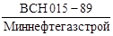
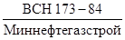
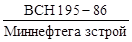
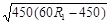
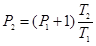

МИНИСТЕРСТВО
СТРОИТЕЛЬСТВА ПРЕДПРИЯТИЙ
НЕФТЯНОЙ И ГАЗОВОЙ ПРОМЫШЛЕННОСТИ
ВСЕСОЮЗНЫЙ
НАУЧНО-ИССЛЕДОВАТЕЛЬСКИЙ ИНСТИТУТ
ПО СТРОИТЕЛЬСТВУ МАГИСТРАЛЬНЫХ ТРУБОПРОВОДОВ
СТРОИТЕЛЬСТВО МАГИСТРАЛЬНЫХ
И ПРОМЫСЛОВЫХ ТРУБОПРОВОДОВ
линии связи и
ЭЛЕКТРОПЕРЕДАЧИ
ВСН 015-89
Миннефтегазстрой
Москва
РАЗРАБОТАНЫ И ВНЕСЕНЫ Всесоюзным научно-исследовательским институтом по строительству магистральных трубопроводов (ВНИИСТ) Миннефтегазстроя СССР: кандидаты техн. наук Я.Г. Али-заде, А.Д. Яблоков; инженеры И.А. Воблов, В.И. Ковальков, В.П. Михайлов.
ПОДГОТОВЛЕНЫ К УТВЕРЖДЕНИЮ Главным научно-техническим управлением Миннефтегазстроя.
С введением в действие ВСН 015-89/Миннефтегазстрой «Строительство магистральных и промысловых трубопроводов. Линии связи и электропередачи» утрачивают силу:
«Инструкция по технологии и организации строительства кабельных линий технологической связи магистральных трубопроводов в различных природно-климатических условиях» (ВСН 173-84/Миннефтегазстрой);
«Инструкция по совмещенному строительству вдольтрассовых ЛЭП 6 - 10 кВ магистральных трубопроводов» (ВСН 195-86/Миннефтегазстрой).
СОГЛАСОВАНЫ: Нефтегазэлектроспецстрой; Союзгазсвязьстрой; ВНИПИтрансгаз.
|
Министерство строительства предприятий нефтяной и газовой промышленности |
Ведомственные строительные нормы |
 |
|
Строительство магистральных и промысловых трубопроводов. Линии связи и электропередачи |
Взамен   |
1. ОБЩИЕ ПОЛОЖЕНИЯ
1.1. Настоящие Ведомственные строительные нормы распространяются на строительство кабельных линий технологической связи магистральных трубопроводов и линий электропередачи (ЛЭП 6 - 10 кВ) промысловых и магистральных трубопроводов.
1.2. При строительстве кабельных линий технологической связи и линий электропередачи, кроме требований настоящего нормативного документа, должны соблюдаться строительные нормы и правила, стандарты и другие нормативные документы, а также правила и руководства, утвержденные Минсвязи и Минэнерго.
1.3. Требования настоящего нормативного документа не распространяются на строительство линий связи и ЛЭП в условиях вечной мерзлоты, при переходах водных преград (шириной воды в меженный период более 30 м), на морских акваториях и в районах с сейсмичностью выше 6 баллов.
1.4. Защиту от коррозии блок-контейнеров необслуживаемого усилительного пункта (НУП) и кабеля связи осуществляют в соответствии с проектом.
|
Внесены лабораторией технологии сооружений линий связи и ЛЭП в трубопроводном строительстве ВНИИСТа |
Утверждены приказом Миннефтегазстроя № 100 |
Срок введения |
1.5. Ширина полосы отвода земель на время строительства линий связи и электропередачи определяется проектом в соответствии с «Нормами отвода земель для магистральных трубопроводов» (СН 452-73), «Нормами отвода земель для электрических сетей напряжением 0,4 - 500 кВ» (СН 465-74) и «Основами земельного законодательства Союза ССР и союзных республик».
1.6. К производству работ подготовительного и основного периодов строительства должны допускаться лица, прошедшие обучение, инструктаж и проверку знаний по технике безопасности.
2. СТРОИТЕЛЬСТВО КАБЕЛЬНЫХ ЛИНИЙ СВЯЗИ МАГИСТРАЛЬНЫХ ТРУБОПРОВОДОВ
2.1. Организация строительства
2.1.1. Строительство кабельной линии технологической связи в системе Миннефтегазстроя ведут:
субподрядным способом на основе договоров с генеральным подрядчиком, сооружающим трубопровод, выполняющим обустройство промысла и др. объектов;
подрядным способом на основе договора с заказчиком (эксплуатационными организациями Мингазпрома и Миннефтепрома) специализированной организацией.
2.1.2. Взаимоотношения между заказчиком и генподрядчиком регламентируются правилами о договорах подряда на капитальное строительство.
2.1.3. Взаимоотношения между генподрядчиком и субподрядчиком регламентируются положением о взаимоотношениях организаций генеральных подрядчиков с субподрядными организациями.
2.1.4. Для выполнения специальных и монтажных работ (устройство подводных переходов, вырубка и расчистка просек, разработка траншей в скальных грунтах и др.) генподрядчик привлекает субподрядные организации.
2.1.5. При строительстве линий связи субподрядным способом генподрядчик обязан предоставить субподрядчику для заключения договора:
выписку из титульного списка стройки с распределением по годам заданий по вводу в действие производственных мощностей и объектов;
выписку из внутрипостроечного титульного списка объектов, по которым предусматривается выполнение работ субподрядчиком;
проектно-сметную документацию;
графики поставки материалов, конструкций и оборудования (разрабатываются совместно с субподрядчиком);
календарный план (график) производства работ по объектам, на которых предусматривается выполнение работ субподрядчиком.
2.1.6. Генподрядчик до начала строительства обязан передать субподрядчику:
техническую документацию на закрепленные на местности знаки полосы временного отвода земель, места пересечения трубопроводов подземными коммуникациями и искусственными сооружениями (обозначить на местности и в рабочих чертежах места перехода от одной категории трассы к другой);
разрешение на производство специальных работ, выполнение которых требует согласия соответствующих организаций (переходы через железные и шоссейные дороги, магистральные и промысловые трубопроводы, кабельные линии и линии электропередачи и т.д.).
2.1.7. Генподрядчик обязан обеспечить субподрядчика:
барабанами с кабелем связи, проводами и тросами;
блок-контейнерами необслуживаемых усилительных пунктов (подъемная и надземная части);
нетиповыми конструкциями для кабельных линий связи.
Порядок, количество и сроки передачи генподрядчиком субподрядчику материалов, деталей и конструкций оговаривают в особых условиях к договору субподряда.
2.1.8. Генподрядчик поставляет материалы, детали и конструкции субподрядчику на его приобъектный склад, место расположения которого определено в проекте организации строительства или в проекте производства работ.
Материалы, детали и конструкции должны быть обеспечены документами, удостоверяющими их качество; забракованные материалы, детали и конструкции должны быть заменены исправными генподрядчиком в сроки, обеспечивающие бесперебойное выполнение работ.
2.1.9. Генподрядчик обязан до начала работ, выполняемых субподрядчиком в соответствии с календарным планом и проектом организации строительства (ПОС), обеспечить:
вырубку и очистку просек в полосе строительства линии связи;
разбивку трассы линии связи и отчуждение земельных участков, устройство проездов вдоль трассы;
рытье и засыпку траншей для кабеля в скальных грунтах;
готовность к установленному сроку кабеля связи на подводных речных переходах.
2.1.10. Готовность фронта работ фиксируется двусторонним актом на основе:
проекта и действующих технических условий на выполнение строительно-монтажных работ;
качественного состояния и степени готовности выполненных генподрядчиком работ;
наличия оборудования и специальных материалов, поставляемых генподрядчиком (заказчиком).
Подготовка строительного производства
2.1.11. До начала основных строительно-монтажных работ должна быть проведена подготовка строительного производства, включающая:
организационно-подготовительные мероприятия;
внеплощадочные подготовительные работы;
внутриплощадочные подготовительные работы.
2.1.12. Организационно-подготовительные мероприятия включают:
изучение проектно-сметной документации. Рабочие чертежи, спецификации для заказа оборудования, кабельной продукции, приборов и др. должны быть переданы исполнителям в срок до 1 июля (для северных районов - до 1 марта) года, предшествующего году строительства (на объем работ первого года строительства);
разработку проекта производства работ и календарного трафика строительства кабельной линии технологической связи, согласованного с графиком строительства трубопровода;
заключение договоров с организациями, обеспечивающими рабочее снабжение, медицинское обслуживание и др.;
решение вопроса об условиях использования существующих транспортных и инженерных коммуникаций, предприятий стройиндустрии, местных строительных материалов;
перебазировку в район строительства строительной техники, материалов, приборов и инструментов.
2.1.13. Внеплощадочные подготовительные работы включают:
строительство площадок для приема грузов;
организацию и обустройство площадок для хранения барабанов с кабелем и пустых барабанов;
организацию полевых жилых городков и быта строителей;
строительство складов ГСП;
организацию связи на период строительства;
подготовку строительной и транспортной техники;
подготовку оборудования и измерительной аппаратуры.
2.1.14. Внутриплощадочные подготовительные работы включают:
приемку подготовленной трассы для строительства кабельной линии связи от генподрядчика;
дополнительную планировку и подготовку трассы прокладки кабеля, работы по обеспечению сохранности действующих трубопроводов, рекультивации земель и охране окружающей среды;
проверку и испытание кабеля перед прокладкой.
2.1.15. Проект производства работ должен быть передан исполнителям до начала производства внеплощадочных подготовительных работ.
2.1.16. Подготовительные работы должны быть технологически увязаны с общим потоком основных строительно-монтажных работ и обеспечивать необходимый фронт работ строительным подразделениям.
2.1.17. Производство основных строительно-монтажных работ можно начинать после завершения (в необходимом объеме) организационных подготовительных мероприятий, внеплощадочных и внутриплощадочных подготовительных работ.
2.2. Строительство кабельных переходов через естественные и искусственные препятствия
2.2.1. Переходы кабеля через естественные и искусственные препятствия (железные и автомобильные дороги, водные преграды, рвы, балки, овраги и т.п.) могут быть как совмещенными с трубопроводами, так и несовмещенными. Конструктивно совмещенные и несовмещенные переходы могут быть выполнены подземными, надземными и подводными.
Вид и конструкция кабельного перехода зависят от конкретных условий строительства и определяются проектом.
2.2.2. При сооружении переходов через судоходные и сплавные реки, через водные преграды в городах и населенных пунктах, через реки по мостам работы должны быть согласованы с заинтересованными организациями.
2.2.3. Работы по сооружению переходов в зависимости от их объема выполняют специализированные бригады или непосредственно механизированная колонна по прокладке кабелей.
2.2.4. При сооружении переходов с большим объемом работ на одной из его сторон должна быть оборудована строительная площадка. На строительной площадке размещают машины и механизмы для производства работ, автотранспорт, оборудование, материалы и жилые вагоны-дома.
2.2.5. Строительство кабельного перехода должно быть закончено ко времени подхода механизированной колонны по прокладке кабеля к сооружаемому переходу. Кабель связи, проложенный на переходе, должен быть проверен на герметичность и находиться под избыточным воздушным давлением.
Строительство совмещенных переходов
2.2.6. Строительство совмещенных кабельных переходов выполняют строители переходов трубопровода (генподрядчик). В состав их работ входят:
а) при сооружении кабельных подземных переходов - монтаж футляров в общем патроне с трубопроводом с закладкой тросов для затяжки кабелей связи;
б) при сооружении надземных кабельных переходов - монтаж трубы-футляра с креплением к несущей конструкции перехода (трубопроводу и др.) с закладкой тросов для затяжки кабелей связи;
в) при сооружении подводных кабельных переходов - прокладка кабелей связи в одной траншее с трубопроводом.
2.2.7. Строители-связисты выполняют работы в приведенной технологической последовательности:
а) при сооружении подземных и надземных переходов:
отрывают траншеи и котлованы;
затягивают кабели связи в футляры;
герметизируют концы футляров;
монтируют отводы;
засыпают траншеи и котлованы;
б) при сооружении подводных переходов:
разрабатывают траншеи и котлованы для укладки и монтажа концов кабеля;
монтируют кабельный переход с сооружаемой кабельной линией связи;
засыпают траншеи и котлованы.
2.2.8. Траншею для укладки концов кабеля по обе стороны препятствия до места стыковки их с кабелем, проложенным мехколонной, отрывают одноковшовым экскаватором, а при невозможности применения экскаватора - вручную. Одновременно готовят котлованы для муфт.
2.2.9. Проходимость футляров проверяют протяжкой тросов. К тросу прикрепляют канат для затягивания кабеля в футляр.
2.2.10. Кабель в футляр затягивают лебедкой с барабана, установленного на кабельном транспортере, домкрате или треноге. Барабан вращают вручную. Размотка кабеля с барабана из-за натяжения кабеля не допускается.
2.2.11. Для затягивания кабеля в футляр используют стальной трос диаметром 9 - 11 мм. Крепят трос к затягиваемому кабелю с помощью стальных кабельных чулок через карабин и компенсатор кручения.
2.2.12. Для защиты оболочки кабеля от механических повреждений при протаскивании при необходимости на выходе из футляра (защитной трубы) устанавливают изогнутый желобок (кабельное колено).
2.2.13. После затяжки кабеля концы футляров заделывают пробкой - смесью сурика с волокнистым материалом.
2.2.14. Засыпку траншей и котлованов ведут экскаватором, бульдозером или вручную.
2.2.15. В скальных грунтах для защиты концов кабеля, прокладываемого в подводящих траншеях, от повреждения камнями в траншее устраивают постель и присыпку из мягкого грунта толщиной по 10 см. Мягкий грунт заготовляют на месте, для удаления камней целесообразно использовать раму с металлической сеткой (грохот) с ячейками не более 3 см.
После присыпки кабеля траншею засыпают вынутым грунтом с помощью бульдозера или вручную.
2.2.16. Выход кабеля связи из грунта и участок кабеля, проходящий по береговой опоре надземного перехода, должны быть защищены от механических повреждений стальной трубой или уголком.
2.2.17. Работы по прокладке кабеля через подготовленный генподрядчиком совмещенный переход выполняет механизированная колонна (бригада из ее состава) при подходе к месту перехода.
2.2.18. Для обеспечения сохранности кабеля и контроля за его герметичностью на совмещенных подводных переходах генподрядчик (строители подводного перехода) предусматривает специальные оголовники (рис. 1), или береговые кабельные колодцы, или подземные камеры НУПа согласно проекту.
Рис. 1. Оголовник для кабеля связи на подводных переходах (рекомендуемая конструкция):
1 - оголовник; 2 - люк; 5 - резиновая прокладка; 4 - манометр, 5 - петли; 6 - кабель связи; dкаб - диаметр кабеля
Строительство несовмещенных переходов
2.2.19. Весь комплекс работ по строительству несовмещенных переходов выполняют строители-связисты.
2.2.20. В состав работ при сооружении несовмещенных переходов (бестраншейным способом) входят:
а) подземные переходы:
разбивка трассы перехода;
отрывка и засыпка котлованов и траншей;
размещение в котловане механизмов для разработки горизонтальной скважины;
закладка труб в скважины;
затягивание кабеля в трубу;
заделка труб;
б) надземные переходы:
разбивка трассы перехода;
отрывка траншей и котлованов;
монтаж несущей конструкции (трубы-футляра или троса) и укладка ее через переход;
затяжка кабелей связи в трубу-футляр или подвеска кабеля на стальном канате;
засыпка траншей и котлованов;
в) подводные переходы:
разбивка трассы перехода и промеры по створу;
срезка береговых откосов;
предварительная проходка кабелеукладчиком по створу перехода;
прокладка кабеля.
2.2.21. Разбивку трассы подземного перехода осуществляет согласно проекту руководитель работ совместно с представителями дорожно-эксплуатационной службы. По оси перехода устанавливают вехи и намечают контуры рабочего и приемного котлованов, а также подводящих траншей.
2.2.22. Подземные несовмещенные переходы при пересечении с шоссе, железными дорогами и т.п. в грунтах I - III группы (IV группы без камней размером более 10 см) сооружают, как правило, бестраншейным способом.
2.2.23. При подземных несовмещенных переходах кабель связи прокладывают в асбестоцементных или полиэтиленовых трубах диаметром 100 мм, соединенных в плеть из отдельных звеньев. Число прокладываемых труб определяется проектом.
2.2.24. На пересечениях с электрифицированными железными дорогами, при использовании вместо асбестоцементных труб металлических, последние предварительно покрывают битумной массой.
2.2.25. Рытье и засыпку рабочего и приемного котлованов, а также подводящих траншей с последующей их засыпкой выполняют экскаватором. Размеры котлованов зависят от конструкции и технологии сооружения переходов.
2.2.26. Концы труб после их прокладки должны выступать по обе стороны от подошвы насыпи или полевой бровки на длину не менее 1 м. Концы труб после их прокладки немедленно закрывают деревянными или пластмассовыми пробками.
2.2.27. В грунтах IV группы и выше при пересечении кабелем автомобильных дорог выполняют открытый несовмещенный переход с разработкой грунта экскаватором или вручную и применением при необходимости отбойных молотков. Проложенный кабель защищают асбестоцементной или стальной трубой или швеллером, при этом согласно проекту прокладывают необходимое количество резервных труб.
2.2.28. Переходы через обводненные участки, небольшие реки, ручьи, овраги, балки и т.п. с пологими склонами берегов и с нетопким спокойным рельефом дна (сложенными мягкими породами без твердых включений) при глубине до 1 м и ширине до 200 м сооружают кабелеукладчиком без остановки движения механизированной колонны.
2.2.29. Несовмещенные кабельные переходы через небольшие горные реки выполняют в траншее, вырытой по дну реки, или прямым проходом мехколонн. В грунтах IV группы и выше предварительно рыхлят грунт взрывным способом при условии согласования с заинтересованными организациями.
2.2.30. Предельные глубины горных рек в зависимости от скорости течения, допустимые для производства работ в русле реки, приведены в табл. 1.
|
Глубина реки (м) при скорости течения, м/с |
|||
|
1 - 1,5 |
До 2 |
До 4 |
|
|
Вручную |
0,9 |
0,8 |
0,6 |
|
Экскаватором |
0,45 |
0,4 |
0,3 |
2.2.31. Если глубина рек меньше указанных в табл. 1 значений, траншею готовят одноковшовым экскаватором, перемещающимся по дну.
Для страховки экскаватор должен быть прикреплен тросом к трактору, стоящему на противоположном берегу (по ходу работы экскаватор приближается к страховочному трактору).
2.2.32. На реках, глубина которых больше приведенных в табл. 1 значений, экскаватор может работать только с подводной насыпи, отсыпаемой по створу перехода.
2.2.33. Переходы кабеля связи через действующие газо- и нефтепроводы сооружают по ходу прокладки кабеля связи механизированной колонной. Все работы по сооружению переходов выполняют вручную в присутствии представителя эксплуатирующей трубопровод организации.
Кабель прокладывают выше трубопровода на расстоянии по вертикали в свету 0,15 м. Траншею для кабеля отрывают только вручную. Механизированная разработка грунта запрещена.
На переходе кабель защищают трубой.
2.2.34. Если при подходе к пересекаемому трубопроводу кабель связи прокладывали кабелеукладчиком, переход через действующий трубопровод выполняют в приведенной технологической последовательности:
останавливает передний трактор мехколонны не ближе 5 м от трубопровода;
расцепляют тракторы мехколонны и перегоняет их через трубопровод по переезду;
сцепляют тракторы в колонну, и на длинном тросе перемещают кабелеукладчик до подхода его к трубопроводу на расстояние до 5 м;
разрабатывают котлован для освобождения ножа и кассеты кабелеукладчика;
вращая барабан, создают слабину кабеля;
открывают кассету ножа кабелеукладчика и вынимают из нее кабель;
поднимают нож кабелеукладчика;
перебазируют кабелеукладчик через трубопровод по переезду с поднятым ножом;
выкладывают кабель на землю;
отрывают траншею над трубопроводом, укладывают в нее кабель в защитной трубе и засыпают;
разрабатывают котлован в 5 м от трубопровода, опускают в него нож кабелеукладчика и заправляют кабель в кассету;
засыпают котлованы;
продолжает прокладку кабеля кабелеукладчиком.
2.2.35. Вопросы, связанные с местом переезда тракторов и кабелеукладчика мехколонны через действующий трубопровод, устройством переездов или использованием существующих, должны быть согласованы с эксплуатирующими трубопровод организациями.
2.3. Строительство необслуживаемых усилительных пунктов. Устройство заземлений
2.3.1. Необслуживаемые усилительные пункты кабельных линий технологической связи трубопроводов располагают вдоль трубопровода на расстоянии от их центра до оси трубопровода не менее 10 м, а от оси кабельной линии - не менее чем на 1 м. Расстояние между НУПами зависит от применяемой системы передачи на кабельной линии связи и определяется проектом.
2.3.2. Работы по строительству НУПов связи включают:
разбивку и привязку НУПов в соответствии с проектом;
подготовку площадки для строительства НУПов;
транспортировку НУПов и другого оборудования и материалов на площадку;
разработку котлованов и подводящих траншей;
подготовку основания и устройство фундаментов;
монтаж блок-контейнера, осмотр и устранение дефектов противокоррозионного покрытия;
монтаж наземной части НУПа;
подключение стаб-кабелей к кабелям связи;
оборудование защиты от коррозии;
устройство заземлений;
засыпку пазух котлована и подводящих траншей слоями по 20 см с последующей трамбовкой;
благоустройство площадки.
2.3.3. Необходимо устанавливать НУП так, чтобы дверь открывалась в сторону, противоположную трубопроводу.
2.3.4. В случае размещения НУПа на участках сельскохозяйственных угодий необходимо проводить рекультивации земли в соответствии с проектом и пп. 2.4.73 - 2.4.78.
Подготовка площадки
2.3.5. При разбивке площадки под НУП центр ее закрепляют репером, а границы - угловыми знаками.
2.3.6. Размер площадки определяют, исходя из размеров котлована под блок-контейнер, объема вынутого грунта, размеров и места временного хранения блок-контейнера, оборудования и строительных материалов, возможности свободного маневрирования механизмов и транспорта.
2.3.7. Планировку площадки производят бульдозером. После окончательной планировки площадки колышками отмечают контур котлована, места отвала грунта и временного хранения блок-контейнера, оборудования и материалов. Центр котлована обозначают репером.
2.3.8. Размер котлована определяют размерами блок-контейнера, уровнем грунтовых вод и допустимой крутизной откосов разрабатываемого грунта.
2.3.9. Глубину котлована определяют по принятой проектом схеме установки в зависимости от уровня грунтовых вод.
2.3.10. Вынутый из котлована грунт следует размещать в 0,5 и от бровки котлована. Дно котлована выравнивают вручную. Грунт откидывают на откосы выемки. Толщина слоя подчистки 0,2 м. На дне котлована устраивают подсыпку из песка или щебня толщиной 0,1 м.
2.3.11. Подводящие траншеи от кабеля до котлована разрабатывают механизированным способом. Глубина траншеи должна быть равной глубине прокладки кабеля, ширина - 0,5 м.
2.3.12. На расстоянии 5 м от котлована НУПа разрабатывают котлованы для монтажа муфты и подключения кабеля к стаб-кабелям НУПа.
Устройство фундаментов
2.3.13. Конструкция основания для блок-контейнера определяется проектом. Как правило, основанием бывает песчаная подушка или железобетонный фундамент.
2.3.14. Горизонтальное положение фундамента проверяют по уровню. Для выравнивания фундамента под него подсыпают сухой лесок.
Монтаж НУПа
2.3.15. Перед установкой на фундамент блок-контейнер и оголовник освобождают от транспортной рамы; съемное устройство и устройство для размещения стаб-кабелей отсоединяют от блок-контейнера.
2.3.16. Строповку блок-контейнера и наземной части проводят за специальные монтажные петли.
2.3.17. Во время установки блок-контейнера на фундамент необходимо следить за равномерностью опускания груза. Опускание производят плавно, без ударов о фундамент, во избежание повреждения изолирующего покрытия блок-контейнера и установленного в нем оборудования и аппаратуры связи.
2.3.18. Блок-контейнер устанавливают на фундамент в соответствии с проектом.
2.3.19. Блок-контейнер к фундаменту крепят анкерами, привариваемыми с одной стороны к монтажным скобам блок-контейнера, а с другой - к тяжам, скрепляющий фундаментные блоки.
2.3.20. Анкера крепления блок-контейнера к фундаменту после монтажа бетонируют бетоном марки 200 на мелком гравии по сетке «рабица» слоем бетона не менее 50 мм.
2.3.21. Наземную часть НУПа устанавливают на кронштейны люка блок-контейнера и крепят болтами. Для удобства установим оголовья на люк блок-контейнера предусмотрены специальные ловители (кольца-фиксаторы).
Ввод кабелей в НУП
2.3.22. В подземную часть НУПа вводят следующие кабели:
высокочастотные кабели связи;
кабели от блоков термодатчиков грунтовых АРУ;
кабели от контуров рабочего, защитного и линейно-защитного заземлений;
кабели от электродов протекторной защиты корпуса НУПа;
соединительный кабель с наземной частью НУПа;
кабели линейной телемеханики;
кабели от антенны и термодатчиков радиокабельной системы.
2.3.23. Ввод кабелей в блочно-комплектный НУП предусмотрен заводом-изготовителем.
Устройство заземлений
2.3.24. Устройство заземлений НУПов следует производить согласно ГОСТ 464-79. НУПы, питаемые дистанционно по схеме «провод-земля», оборудуют тремя обособленными заземлениями: рабочим (если на данном НУПе оканчивается цепь дистанционного питания), защитным и линейно-защитным.
2.3.25. Схемы заземления металлических покровов кабелей на вводах в НУПы выполняют в соответствии с проектом.
2.3.26. Изолирующие муфты устанавливают в земле около НУПов на расстоянии не более 3 - 5 м от блок-контейнера.
2.3.27. Использование металлической оболочки и брони кабелей в качестве заземления не допускается.
2.3.28. При сооружении заземления необходимо:
разработать траншею в соответствии с проектом;
погрузить в грунт вертикальные или уложить на дно траншеи горизонтальные электроды-заземлители;
соединить контур заземления стальной соединительной полосой;
соединить с контуром заземления токоотводной кабель, проложить его в траншее и ввести в НУП.
2.3.29. Соединение элементов заземления с соединительной полосой следует выполнять сваркой. Сварные ивы, расположенные в земле, должны быть покрыты битумным лаком.
2.3.30. Ввод от заземления должен быть выполнен только изолированным проводом (например, кабель типа НРГ, АНРГ).
2.3.31. На участках с высоким удельным сопротивлением грунт обрабатывают химическим способом в месте устройства заземлителей или заменяют насыпным грунтом с небольшим удельным сопротивлением, или оборудуют заглубленные или глубинные заземлители.
2.3.32. При обработке грунта поваренной солью отрывают котлован диаметром 3 - 5 м вокруг стержневого заземлителя и наполняют его слоями измельченного грунта и поваренной соли из расчета 8 - 10 кг на 1 м длины заземлителя. Обработка снижает сопротивление заземлителя в 3 - 4 раза. Каждые 2 - 4 года подобную обработку солью следует повторять. Траншеи соединительных шин солью не обрабатывают.
2.3.33. При обработке грунта с небольшим удельным сопротивлением для каждого стержневого заземлителя отрывают котлован радиусом 1,5 - 2 м и глубиной, равной длине заземлителя плюс 0,8 м. После установки заземлителя котлован заполняют грунтом с небольшим удельным сопротивлением и утрамбовывают.
Засыпка котлованов и траншей. Благоустройство площадки
2.3.34. Котлованы и подводящие траншеи засыпают грунтом после монтажа НУПа и ввода кабелей.
2.3.35. Пазухи котлованов и траншей засыпают слоями до 20 - 30 см с последующей трамбовкой. Грунт из отвала в котлован перемещают бульдозером.
2.3.36. Грунт, оставшийся после засыпки котлованов и траншей, используют для благоустройства площадки.
2.3.37. При установке НУПа с выступающей наружной частью блок-контейнера, последняя должна быть обвалована. Обваловку устраивают из грунта, привозимого из ближайших карьеров, и грунта, оставшегося после засыпки котлованов и траншей. Обваловку проводят бульдозером с последующей доработкой вручную.
2.3.38. Порубочные остатки по согласованию с владельцем земли должны быть вывезены с территории площадки.
2.3.39. Площадка и обваловка должны быть одернованы или засеяны многолетними травами, закрепляющими грунт по всей поверхности площадки. В засушливых районах обваловку закрепляют плитами из сборного железобетона.
2.3.40. Место установки НУПов на трассе кабельной магистрали, во избежание наезда транспорта, в необходимых случаях ограждают четырьмя железобетонными столбиками высотой 1,5 м с предупредительными табличками «Проезд запрещен», «Охранная зона кабеля связи».
2.3.41. На двери наземной части укрепляют табличку «Опасно для жизни! Высокое напряжение!».
2.4. Механизированная прокладка кабеля связи
Общие положения
2.4.1. Прокладку кабелей связи в зависимости от условий прохождения трассы и характера грунтов выполняют:
ножевым кабелеукладчиком (КУ) без образования траншеи;
в заранее подготовленную траншею (экскаваторами, взрывным способом, отбойными молотками, вручную).
2.4.2. Минимальные значения протяженности трассы при прокладке кабеля кабелеукладчиком и предельные расстояния переброски мехколонны, при которых целесообразно применение кабелеукладчика, приведены в табл. 2. При протяженности трассы меньше приведенных в табл. 2 величин следует применять землеройные машины или выполнять работу вручную.
2.4.3. Кабели связи прокладывает механизированная колонна, выполняющая комплексно следующие работы:
разбивку трассы,
дополнительную планировку трассы;
устройство спусков для пересечения речек, арыков, коллекторов, балок и оврагов;
погрузку, транспортировку и разгрузку барабанов с кабелем и кабельной арматуры;
предварительную пропорку трассы;
прокладку кабелей (кабелеукладчиком при обычном сцепе тракторов или на длинном тросе);
установку запорных столбиков, фиксирующих стыки строительных длин кабеля и КИП;
установку знаков, фиксирующих каста поворотов трассы, подходов к переходам через искусственные препятствия, окончания работы механизированной колонны;
рекультивацию культурных земель.
|
Предельные расстояния перевозки механизмов до места производства работ (от базы или предыдущего участка работ), км |
|
|
Многопарные коаксиальные и симметричные |
|
|
10 |
До 50 |
|
15 |
До 120 |
|
20 |
До 180 |
|
Однокоаксиальные, одночетверочные |
|
|
5 |
До 10 |
|
7 |
До 15 |
|
10 |
До 50 |
2.4.4. При прокладке кабеля в заранее подготовленную траншею дополнительно выполняют:
отрывку траншеи;
устройство постели в каменистых и щебенистых грунтах;
прокладку кабеля;
присыпку кабеля в каменистых и щебенистых грунтах;
засыпку траншеи.
Дополнительная планировка трассы
2.4.5. Для обеспечения качественной прокладки кабеля на требуемую глубину на подготовленной и спланированной генподрядчиком полосе строительства проводят дополнительную планировку трассы.
2.4.6. При дополнительной планировке:
выравнивают микрорельеф;
срезают продольные и поперечные уклоны;
подсыпают низинные места;
устраивают съезды и спуски к рекам и через овраги.
Планировку полосы особенно тщательно производят в зоне работы кабелеукладчика и разработки траншеи роторным экскаватором, которые, перемещаясь по трассе, формируют глубину прокладки кабеля и профиль дна траншеи, копируя поверхность земли.
2.4.7. Дополнительную планировку трассы выполняет бульдозер, входящий в состав мехколонны. Разработку и перемещение грунта в зависимости от условий выполняют продольными и поперечными проходами.
2.4.8. На участках барханных и подвижных песков, где под действием ветра на спланированной генподрядчиком полосе образовались песчаные холмы и впадины, дополнительную планировку оформляют актом на непредвиденные работы в присутствии представителя заказчика.
Планировка трассы линии связи в условиях барханных и грядоячеистых песков заключается в срезке барханов и отсыпке грунтов в межбарханные впадины за пределами полосы.
2.4.9. На сорах и такырах в конце лета необходимо удалять верхнюю засохшую корку.
2.4.10. На болотах III и частично II типа дополнительная планировка не производится.
2.4.11. Для работы в пустыне отвал бульдозера должен быть оборудован специальными открылками для перемещения сыпучих песков.
2.4.12. Для работы на болотах I и частично II типа бульдозер должен иметь широкие болотные гусеницы.
Предварительная пропорка трассы
2.4.13. Предварительную пропорку трассы выполняют:
в лесной зоне;
на болотах I типа, на крутых уклонах в горах;
в регионах с грунтами IV группы и выше, поддающимися расклиниванию;
в разборных скальных грунтах.
На болотах II и III типа предварительную пропорку не производят.
2.4.14. В щебенистых, каменистых грунтах IV группы и выше, в разборных скальных грунтах производят многократную пропорку трассы.
2.4.15. Предварительную пропорку осуществляют:
специальным пропорщиком (рыхлителем), закрепленным на мощном тракторе;
сцепом тракторов со специальным прицепным пропорщиком или кабелеукладчиком с установленным пропорочным ножом.
2.4.16. При однократной пропорке трассы:
отрывают котлован для первоначального заглубления пропорочного ножа на заданную глубину ковшовым экскаватором или вручную;
опускают нож в котлован;
проходят сцепом тракторов с пропорщиком или кабелеукладчиком участок;
возвращают мехколонну в начало участка.
2.4.17. При многократной пропорке выполняют перечисленные в п. 2.4.16 первые три операции, затем поворачивают сцеп тракторов с пропорщиком или кабелеукладчиком, пропарывают трассу в обратном направлении второй раз.
Операции в приведенной последовательности повторяют до разрыхления грунта на заданную глубину.
2.4.18. В горных условиях на полках, косогорах и в стесненных условиях пропорку можно производить только специальным пропорщиком на мощном тракторе, так как разворот сцепа тракторов крайне затруднен.
В исходное положение трактор-пропорщик с поднятым ножом возвращается задним ходом.
2.4.19. Во время пропорки необходимо периодически очищать нож пропорщика или кабелеукладчика от увлекаемых им за собой корней и камней.
Прокладка кабелей кабелеукладчиком
2.4.20. В основные работы по прокладке кабелей кабелеукладчиком входят:
сцепка и перецепка тракторов и кабелеукладчика;
установка барабанов с кабелем на кабелеукладчик;
разгрузка пустых барабанов с кабелеукладчика;
отрывка котлована для первоначального заглубления ножа кабелеукладчика;
анкеровка конца кабеля в начале прокладки;
сращивание концов кабелей;
заправка кабелей в кассету ножа кабелеукладчика;
заглубление и выглубление ножа;
чистка ножа;
прокладка кабеля;
засылка щели.
2.4.21. Перед прокладкой необходимо измерить избыточное воздушное давление в кабеле, которое должно соответствовать зафиксированному при проверке на кабельной площадке. Строительные длины кабеля, в которых избыточное давление перед размоткой ниже ранее зафиксированного, прокладке не подлежат до проведения повторного испытания герметичности оболочки и устранения причины, вызвавшей утечку.
2.4.22. Тракторы сцепляют стальным тросом диаметром не менее 56 мм. Сцепку производят отдельными тросами, огибающими форкоп переднего трактора и идущими к форкопу заднего трактора через серьгу, навешенную на переднем его крюке, и замыкающимися петлями на себя. Таким образом, возрастающее тяговое усилие передается от трактора к трактору, нагружая его раму (рис. 2).
Рис. 2. Сцепка тракторов тросами:
1 - трос диаметром 36 мм; 2 - ролик форкопа; 3 - петля крюка
2.4.23. Расстояние между тракторами при работе в степи, равнинно-лесистой местности, на болотах глубиной до 1 м с твердым дном, в пустынях и полупустынях должно составить 3 - 5 м (рис. 3).
2.4.24. Если несущая способность болот допускает работу и неоднократный проход тракторов с широкими гусеницами (удельное давление на грунт меньше 0,035 МПа), прокладку кабеля производят непосредственным проходом болота, сцепкой тракторов при расстоянии между ними 20 - 30 и (рис. 4).
Через болота II и III типа кабели прокладывают специальным болотным кабелеукладчиком.
Рис. 3. Обычная сцепка при работе на твердых грунтах и на болотах глубиной до 1 м с твердым дном
2.4.25. При переходе небольших участков болот I и II типа шириной в створе до 200 м, допускающих проход болотного трактора с кабелеукладчиком, последней трактор оцепа соединен непосредственно с кабелеукладчиком, а к последующим тракторам протягивают трос длиной, соответствующей протяженности болота в створе. Тракторы идут в обычной сцепке по твердому грунту (рис. 5).
Рис. 4. Разреженная сцепка при работе на болотах I типа
2.4.26. Установку барабанов с кабелем с автомашины или волокуш на кабелеукладчик производят краном или трубоукладчиком, входящими в состав мехколонны.
Снятые с кабелеукладчика пустые барабаны грузят на автомашины для отправки их на кабельную площадку или склад заказчика. Установленные на кабелеукладчик барабаны освобождают от обшивки.
2.4.27. Котлован для первоначального заглубления ножа кабелеукладчика на заданную глубину и вывода конца строительной длины кабеля отрывают экскаватором или вручную.
Рис. 5. Обычная сцепка при работе на болотах I типа с твердого грунта
2.4.28. Анкеровку выведенного конца первой строительной длины кабеля выполняют с помощью стального кабельного чулка концевого типа, надетого на кабель и закрепленного тросом диаметром 9 - 11 мм за якорь, трактор, автомашину и т.д.
2.4.29. Сращивание концов кабелей производят в следующем порядке:
проверяет манометром герметичность оболочки кабеля на барабанах, связывают кабели внахлест кабельной или полихлорвиниловой лентой на длину 0,5 - 0,8 м. Длина нахлеста зависит от типа кабеля и составляет 1,5 - 3,0 м. Концы кабелей связывают так, чтобы, конец проложенной строительной длины кабеля при входе в кассету располагался со стороны верхней крышки кассеты. Связывание кабелей проводят с конца прокладываемой строительной длины (рис. 6). Связанные концы заправляют в кассету кабелеукладчика.
2.4.30. На кабелеукладчике работают по два человека на каждом барабане, они обеспечивают создание слабины кабеля перед началом и в процессе прокладки, притормаживание барабанов при внезапных остановках кабелеукладчика или принудительную размотку барабанов.
2.4.31. На орошаемых землях необходимо применять кабелеукладчики с усиленной рамой, что позволяет установить, кроме обычных ножей для прокладки на глубину 1,1 - 1,2 м, специальный нож для орошаемых земель с глубиной прокладки кабеля 1,8 - 2,0 м.
Рис. 6. Связывание концов строительных длин кабеля:
1 - конец проложенной строительной длины; 2 - направление обмотки лентой; 3 - конец прокладываемой строительной длины
2.4.32. При прокладке кабелей связи через орошаемые земли на глубине 1,8 - 2,0 м в сцепку тракторов включают бульдозер и трубоукладчик.
2.4.33. В горных условиях кабели прокладываются кабелеукладчиком по уклону как снизу вверх, так и сверху вниз. При работе на подъеме в сцепку тракторов включают бульдозер.
2.4.34. В процессе прокладки кабеля необходимо непрерывно контролировать глубину заложения кабеля по положения кабелеукладочного ножа, который должен находиться на заданной глубине. Контроль глубины можно вести комплексами автоматического контроля типа «Параметр-1» или визуально по положению кабелеукладочного ножа с последующей проверкой с помощью специального мерного шеста или кабелеискателя через 20 - 50 м.
2.4.35. Цель от ножа кабелеукладчика засыпают траншеезасыпателем, прицепленным к кабелеукладчику или отдельному трактору, и отвалом бульдозера.
2.4.36. После прохода мехколонны необходимо восстановить поврежденные берега арыков и коллекторов. Эту работу выполняют бульдозером, проводившим планировку трассы.
2.4.37. На мелиоративных и орошаемых землях при прокладке кабеля не должны быть повреждены закрытые дренажные и оросительные сети. Работы по восстановлению поврежденных дренажных и оросительных сетей при прокладке кабеля связи выполняют строители-связисты.
Прокладка кабелей кабелеукладчиком на длинном тросе
2.4.38. Прокладку кабеля черва болота II и III типа длиной менее 1 км, заполненные водой арыки и коллекторы глубиной более 1 м, непроходимые для мехколонны соры, такыры, заболоченные участки осуществляют кабелеукладчиком, перемещаемым по трассе на длинном тросе сцепкой тракторов или специальной тяговой лебедкой (рис. 7).
Вариант 1
Вариант 2
Рис. 7. Обычная сцепка с длинным тросом при работе на болотах II - III типа
2.4.39. Длина троса при прокладке кабеля через болота может достигать 1000 и, а при прокладке через арыки - до 300 м.
2.4.40. Для прокладки кабелеукладчиком кабеля через болота II и III типа необходимо:
протянуть вручную или гусеничным болотоходом тонкий пионерный трос с барабана, установленного на козлах или в кузове автомашины на противоположном берегу болота;
оставить кабелеукладчик и один из тяговых тракторов на исходном берегу болота;
перебросить тяговые тракторы на противоположную сторону болота в объезд или установить специальную тяговую лебедку;
протянуть тракторами или лебедкой тяговый трос с барабана, установленного на козлах на исходном берегу, с помощью пионерного троса;
пионерный трос намотать на барабан;
протянуть кабелеукладчик с кабелем через болото.
2.4.41. При протаскивании кабелеукладчика через болото запрещается нахождение на нем людей.
2.4.42. Переброску тракторов на другую сторону болота, непроходимых соров, такыров и заболоченных участков осуществляют в объезд, а через водные препятствия - по ближайшим мостам общего пользования или временным насыпным мостам, строительство которых должно быть предусмотрено в смете проекта или оформлено актом на непредвиденные расходы.
2.4.43. На водных преградах пионерный трос переправляют на другой берег вброд, вплавь на лодке или плоту.
2.4.44. На борах, такырах и заболоченных участках трос переправляют вездеходом или вручную после тщательной проверки возможности перехода.
Разработка траншей
2.4.45. Траншеи для прокладки кабеля разрабатывают механизированным способом с использованием траншейных и одноковшовых экскаваторов. Для рыхления скальных и мерзлых грунтов применяют мощные тракторные рыхлители или буровзрывной мелкошпуровый способ предварительного рыхления. Отдельные работы выполняют вручную.
2.4.46. Разработку траншей для прокладки кабеля в грунтах плотностью до IV группы включительно ведут траншейными, роторными, фрезерными или цепными экскаваторами. В районах сыпучих грунтов и в районах с высоким уровнем грунтовых вод траншейные экскаваторы не применяют.
В сыпучих грунтах траншею целесообразно разрабатывать одноковшовыми экскаваторами, оборудованными ковшом-драглайном.
2.4.47. В песчаных районах и в районах с высоким уровнем грунтовых вод траншею отрывают непосредственно перед прокладкой кабеля.
После окончания земляных работ прилегающая полоса в зоне подвижных песков должна быть обязательно закреплена.
2.4.48. Плотные грунты и разборную скалу V - VII групп рыхлят мощным спецпропорщиком на тракторе с последующей очисткой траншеи. Пропорщик перемещается по оси будущей траншеи с разворотом на концах участка. При работе на уклонах рыхление производят только при перемещении вниз по уклону, возврат вверх выполняют на холостом ходу.
2.4.49. Технология разработки траншей одноковшовым и роторным экскаваторами на продольных уклонах приведена на рис. 8, 9 и в табл. 3.
|
Направление движения экскаватора |
|
|
Одноковшовый экскаватор |
|
|
a £ 15 |
Сверху вниз или снизу вверх |
|
15 £ a £ 22 |
Сверху вниз или снизу вверх с якорением экскаватора |
|
22 £ a £ 30 |
Сверху вниз с якорением экскаватора |
|
Роторный экскаватор |
|
|
a £ 15 |
Сверху вниз или снизу вверх |
|
15 £ a £ 25 |
Сверху вниз |
|
25 £ a £ 30 |
Сверху вниз с якорением экскаватора |
Рис. 8. Схема работы на уклоне одноковшового экскаватора:
а - с прямой лопатой; б - с обратной лопатой
Рис. 9. Схема работы на уклоне траншейного экскаватора
При разработке траншеи на продольных уклонах направление движения экскаватора следующее: с прямой лопатой - ковшом вперед по ходу работы; с обратной лопатой - ковкой назад по ходу работы.
2.4.50. В качестве якоря на крутых уклонах, а также в сырую погоду используют трактор или бульдозер, которые сцепляют с экскаватором страховочным тросом диаметром не менее 26 мм. Страховочная машина должна быть предусмотрена в составе мехколонны.
2.4.51. Трактор, используемый в качестве якоря, должен быть установлен на горизонтальной площадке (естественной или специально подготовленной). Бульдозер, используемый в качестве якоря, можно помещать на уклоне, при этом отвал бульдозера должен быть направлен вниз по уклону и заглублен в грунт (рис. 10).
Рис. 10. Схема использования бульдозера как якоря на уклоне
2.4.52. После выработки траншеи на длину страховочного троса экскаватор заякоривают ковшом в грунт и бульдозер (трактор) спускается по уклону на новую позицию.
2.4.53. Разработку траншей на болотах в зависимости от несущей способности грунтов ведут:
на болотах I типа в любое время года и II типа в зимних условиях - одноковшовыми экскаваторами с обратной лопатой на уширенных гусеницах или на обычных гусеницах с применением перекидных сланей или щитов;
на болотах II и III типа (за исключением сплавинных болот) в летних условиях - специальными болотными экскаваторами (ЭО-4221, МПТ-31 и др.) или обычными экскаваторами, установленными на понтонах;
взрывом на выброс.
2.4.54. Буро-взрывные работы по рыхлению скальных пород, разработке траншей на болотах выполняет специальная бригада территориального управления Союзвзрывпрома, персонал которой имеет допуск и разрешение на производство взрывных работ и все необходимое оборудование.
2.4.55. Разработку траншеи вручную или отбойными молотками ведут на небольших участках при подходе к НУПам, линейным кранам и другим препятствиям, на пересечении с подземными коммуникациями, в местах, где невозможна механизация работ, на продольных уклонах более 50° при работе сверху вниз по уклону.
Ширина траншеи, разрабатываемой вручную, приведена в табл. 4.
|
Ширина траншеи без крепления поверху, м |
|
|
0,50 |
0,35 |
|
0,60 - 0,70 |
0,40 |
|
0,90 |
0,40 |
|
1,00 |
0,45 |
|
1,20 |
0,50 |
Ширина траншеи понизу может быть на 0,1 м меньше, чем поверху.
2.4.56. максимально допустимая крутизна откосов траншей при разработке грунтов естественной влажности при отсутствии грунтовых вод приведена в табл. 5.
|
Глубина выемки до 1,5 м |
||
|
Угол между направлением откоса и горизонталью, град |
Отношение высоты откоса к его заложению |
|
|
Насыпной естественной влажности |
76 |
1:0,25 |
|
Песчаный и гравийный, влажный (насыщенный) |
63 |
1:0,5 |
|
Глинистый: |
||
|
супесь |
76 |
1:0,25 |
|
суглинок |
90 |
1:0 |
|
глина |
90 |
1:0 |
|
Лессовидный, сухой |
90 |
1:0 |
Устройство постели
2.4.57. В каменистых грунтах и в грунтах с включением камней и щебня в траншее устраивают постель из разрыхленной земли или песка для защиты кабеля от механических повреждений при засыпке траншеи. Толщина верхнего и нижнего слоев постели должна быть не менее 10 см.
2.4.58. Перед устройством в траншее постели из мягкого грунта дно траншеи должно быть очищено вручную от крупных камней.
2.4.59. При использовании для защиты кабеля от повреждений при засыпке траншеи соломенных и камышовых матов их разрезают по месту и укладывают в траншею с перекрытием снизу вверх по склону.
Прокладка кабеля в траншею
2.4.60. Кабель в заранее подготовленную траншею прокладывают тремя способами:
опускают в траншею с барабана, установленного на кабельном транспортере, перемещаемом трактором вдоль траншеи, или с кабелеукладчика, перемещаемого над траншеей;
сматывают с барабана, установленного на козлах-домкратах или кабельном транспортере, и протаскивают с помощью каната лебедкой по специальным роликам (в станине), устанавливаемым на дне траншеи;
сматывают с барабана, установленного на козлах-домкратах или кабельном транспортере, и выносят вдоль траншеи, после чего опускают на дно (на коротких участках трассы).
2.4.61. Во всех случаях кабель сматывают с барабана вращением последнего двумя рабочими. Вращение барабана за счет натяжения кабеля недопустимо.
2.4.62. При укладке кабеля с движущегося кабельного транспортера или кабелеукладчика скорость не должна превышать 1 км/ч, рабочие должны принимать кабель и укладывать на дно траншеи.
2.4.63. При прокладке кабеля на роликах канат лебедки соединяют с кабелем стальным кабельным чулком концевого или сквозного типа и протаскивают по роликам со свободным скольжением. Расстояние между роликами не должно превышать 5 м на прямых участках трассы. Станины с роликами должны быть установлены на всех поворотах траншеи.
2.4.64. При прокладке кабеля вручную число рабочих определяют из предельной массы кабеля (35 кг), приходящейся на одного рабочего. На уклонах более 15° предельная масса кабеля не должна превышать 20 кг.
2.4.65. Не допускается волочение кабеля по земле и дну траншеи; должна быть обеспечена полная сохранность защитных покровов кабеля.
2.4.66. При ручной прокладке кабеля необходимо подготовить тропу вдоль траншеи для передвижения рабочих с кабелем. При работах на продольных уклонах более 20° и в период дождей рабочие должны носить съемные металлические подковы с шипами.
2.4.67. На продольных уклонах более 15° кабель целесообразно прокладывать только сверху вниз. Если при этом приходится изменять первоначальное направление движения мехколонны (идти навстречу), необходимо предварительно перемотать кабель на другие барабаны, чтобы обеспечить прокладку кабеля концом А в одном направлении на всем протяжении участка.
Засыпка траншеи
2.4.68. Засыпку траншеи ранее вынутым грунтом выполняют косопоперечными проходами бульдозера к оси траншеи.
В местах, где применить бульдозер невозможно, засыпку траншеи выполняют вручную. На продольных уклонах более 30° траншею засыпает вручную с послойным трактованием и увлажнением грунта слоями по 0,1 м на всем протяжении уклона.
2.4.69. Засыпка траншеи торфом, растительной почвой, грунтами с примесью щепы, опилок, навоза и других органических примесей не допускается.
2.4.70. В местах пересечения траншеи с другими подземными сооружениями или кабелями ее засыпают песчаным грунтом слоями, толщина которых должна определяться местными условиями, но не быть более 0,1 м.
2.4.71. В скальных грунтах траншеи засыпают привозным песчаным грунтом толщиной слоя не менее 0,1 м, после чего можно засыпать вынутым грунтом.
2.4.72. После засыпки траншеи грунт уплотняют механическими или ручными трамбовками, а затем из оставшегося грунта бульдозером над траншеей делают валик высотой до 10 % от глубины траншеи в зависимости от категории грунта.
Рекультивация
2.4.73. При прокладке кабельной линии связи в траншею и строительстве НУПов на землях колхозов и совхозов должна быть проведена рекультивация. Объем и площадь рекультивации определяют проектом. Передачу землепользователям восстановленных земель следует оформлять актом; без указанного акта работы по рекультивации генподрядчиком не оплачиваются.
2.4.74. Техническая рекультивация земель при строительстве заключается в снятии плодородного слоя почвы до начала строительных работ, перемещении его к месту временного хранения и нанесении его на восстанавливаемые земли после окончания строительных работ.
2.4.75. В теплое время года снятие плодородного слоя почвы и его перемещение в отвал следует производить бульдозерами: продольно-поперечными ходами при толщине слоя до 20 см и поперечными при толщине слоя более 20 см.
2.4.76. Плодородный слой почвы снимают на всю толщину по возможности за один проход, снятие плодородного слоя за несколько проходов допускается как исключение.
Не допускается смешивание плодородного слоя почвы с минеральным грунтом.
2.4.77. Плодородный слой наносят после засыпки траншеи под кабель и котлованов под НУП. Плодородный слой необходимо наносить в теплое время года (при нормальной влажности и достаточной несущей способности грунта).
Для восстановления плодородного слоя применяют бульдозеры, работающие косопоперечными ходами, перемещающие плодородный слой из временного отвала в зону, где он был снят, и разравнивающие его.
2.4.78. При рекультивации строительной полосы, проходящей по скальным грунтам, остатки скальных грунтов следует убрать. Бульдозером собирают их в кучи, грузят на самосвалы и вывозят со строительной полосы.
Прокладка кабеля на оползневых участках и в тоннелях
2.4.79. При надземной прокладке трубопровода в горах на оползневых участках предусматривают крепление кабеля, зачищенного трубой или желобом, к трубопроводу.
2.4.80. Если для защиты трубопровода на оползневом участке построена подпорная низовая стена, то кабель связи следует крепить к наружной поверхности подпорной стены (рис. 11) с устройством компенсационных изгибов через 15 - 20 м для создания необходимого запаса кабеля на случай смещения стены при оползне. Величину изгиба определяют типом кабеля. Кабель в местах компенсационных изгибов защищают металлическим листом толщиной 4 - 5 мм. При прокладке двух кабелей расстояние между ними по высоте должно быть 150 - 200 мм.
Рис. 11. Схема прокладки кабеля по подпорной стене:
1 - крепежная скоба, 2 - резиновая втулка; 3 - кабель, 4 - шуруп 4´400 мм; 5 - деревянная пробка диаметром 12 мм
2.4.81. Кабель может быть проложен у низовой подпорной стены в траншее шириной 900 - 1000 мм с устройством песчаной постели, его следует прокладывать змейкой для создания необходимого запаса при оползне (рис. 12).
Рис. 12. Прокладка кабеля в широкой траншее змейкой:
dк - диаметр кабеля; R
и R1 - радиус змейки; l и l1 - длина
волны; а - при dк £ 30 мм l
= 4R; б - при dк
> 30 мм l = 4 
2.4.82. При прохождении трубопровода через тоннель кабели связи размещают на крюках и скобах на высоте 1,5 - 1,8 м. Расстояние между скобами 0,5 м. Крепление скоб приведено на рис. 13 и 14.
Рис. 13. Крепление скоб в тоннелях:
1 - алебастр; 2 - стенка тоннеля; 3 - скоба; 4 - кабели связи
Рис. 14. Крепление крюков в тоннелях:
1 - алебастр; 2 - стенка тоннеля; 3 - кабель связи; 4 - крюк (скоба)
Прокладка кабеля с наружным полиэтиленовым шлангом
2.4.83. При прокладке кабелей связи в полиэтиленовых защитных шлангах (типа МКСАШп, МКССШп и др.) должны быть приняты меры по сохранению шланга. Следует обходить участки, содержащие сточные воды, болотный газ, навозные отбросы, известковые почвы и другие химически активные включения.
2.4.84. Перед прокладкой кабеля для обеспечения постоянной глубины прокладки и стабильности хода кабелеукладчика трасса строительства должна быть тщательно спланирована бульдозером.
2.4.85. При прокладке кабеля необходимо обеспечивать равномерное вращение барабанов, следить за синхронностью их вращения и необходимой слабиной кабеля. Размотку кабелей с барабанов следует выполнять преимущественно по С-образной схеме.
2.4.86. Кабель заправляют в кассету только после заглубления рабочего органа кабелеукладчика на проектную глубину прокладки.
2.4.87. Выглубление рабочего органа кабелеукладчика должно быть выполнено после разработки траншеи над проложенным кабелем на длине 1,5 - 2,0 мм извлечения кабеля из кассеты.
2.4.88. Сращивание концов кабелей при прокладке кабелеукладчиком проводят в соответствии с п. 2.4.29. Для предотвращения повреждений шланговых покрытий лопатами при разработке котлованов перекрытие концов строительных длин кабеля должно быть 1,7 - 1,8 м с обмоткой их по всей длине нахлеста слоем ленты из стеклоткани или других материалов, не загрязняющих внутреннюю поверхность кассет.
Обмотку концов кабеля следует проводить от места их входа в кассету, т.е. с конца вновь прокладываемого кабеля к барабану. При этом необходимо туго связывать кабели только на длину 0,5 - 0,8 м от кассеты, затем обмотку кабелей выполняют с некоторым послаблением слоев.
2.4.89. На кабелеукладчиках необходимо применять роликовые кабеленаправляющие кассеты или существующие лотковые кассеты со следующими конструктивными изменениями:
торец входного раструба скругляют и расширяют по контуру, расстояние от торца до уровня грунта должно быть не менее 800 мм;
криволинейная часть поверхности кассеты должна обеспечивать выход кабеля из кассеты по допустимому радиусу:
Rдоп > ndк;
где dк - наружный диаметр кабеля;
n - коэффициент. Для кабелей типа МКСАШп при диаметре по оболочке dк < 30 мм n = 15, dк > 30 мм n = 20 мм, для кабелей МКСШп n = 15.
Целесообразно на внутренней плоскости крышки кассеты установить вращающиеся ролики:
торец выходного отверстия должен быть усилен по периметру приваркой пластин с последующим скруглением внутренних кромок;
зазор между торцом разделительного ребра крышки и поверхностью кассеты должен быть не более 5 м по всей длине;
внутренние поверхности кассет, соприкасающиеся с движущимся кабелем в процессе прокладки, должны иметь 4 - 5-й класс чистоты, сварные швы должны быть зачищены от заусенцев и острых кромок.
2.4.90. При прокладке кабеля в траншею камни, булыжник, щебень, глыбы грунта должны быть убраны с бровки траншеи.
2.4.91. Дно траншеи должно быть выровнено и вычищено от камней; в грунтах, где может быть нанесено повреждение кабелю, необходимо устраивать подсыпку из разрыхленного грунта или песка толщиной до 10 см.
2.4.92. После укладки кабеля необходимо присыпать его разрыхленным грунтом толщиной 10 см. Грунт для засыпки должен быть очищен от камней и других крупных включений.
2.4.93. При укладке кабеля в траншею следует использовать вращающиеся опорные ролики, предохраняющие кабель от нарушения покрытия и снижающие тяговые усилия. Волочение кабеля по грунту, асфальту и т.п. категорически запрещается.
2.4.94. При строительстве совмещенных и несовмещенных переходов края труб, в которых прокладывается кабель, с внутренней стороны должны быть заовалены. В местах выхода кабеля из футляра необходимо использовать кабельное колено.
2.4.95. Затягивание кабеля в футляры при сооружении совмещенных и несовмещенных переходов следует производить с помощью металлического чулка концевого типа. При этом в месте захвата снимается отрезок шланга, соответствующий одной трети длины чулка, что позволяет равномерно распределять нагрузку на оболочку кабеля и на шланг.
2.4.96. Для уменьшения сопротивления трения во время затягивания кабеля полиэтиленовый шланг следует постоянно смачивать водой, применение технического вазелина и других технических масел запрещается.
2.5. Фиксация трассы
2.5.1. Трасса проложенного кабеля на местности должна быть закреплена с помощью замерных столбиков и предупредительных знаков в следующих точках:
в местах установки муфт и кабельных колодцев (рис. 15 - 17, а);
в местах отхода кабеля от трубопровода (рис. 18, 19);
в местах пересечения кабеля с подземными коммуникациями и воздушными линиями связи или электропередачи;
в местах перехода кабеля через автомобильные или железные дороги и водные преграды (рис. 20, 17);
на углах поворота кабеля;
в месте размещения НУПа (рис. 21);
на прямолинейных участках трассы.
2.5.2. Замерные трех- или четырехгранные столбики для фиксации трассы кабеля изготовляют из железобетона. Длина столбиков 1,2 м (подземная часть 0,7 м), ширина боковой грани - 12 - 15 см. Столбик после установки окрашивают негашеной известью.
На боковую грань столбика, обращенную к трубопроводу, черной масляной краской наносят условные знаки и номера в соответствии с назначением столбика.
Рис. 15. Установка замерного столбика у муфты на однокабельной линии связи:
1 - котлован; 2 - муфта; 3 - замерный столбик
Рис. 16. Установка замерного столбика у муфт на двухкабельной линии связи:
1 - котлован; 2 - муфта № 1; 3 - муфта № 2; 4 - замерный столбик; 5 - кабель № 1; 6 - кабель № 2
Рис. 17. Установка замерных столбиков у колодцев:
а - колодец проходной; б - колодец разветвительный на речных переходах
Рис. 18. Столбик дополнительный в местах отхода кабеля от трубопровода
Рис. 19. Установка дополнительных столбиков на непродолжительных отклонениях трассы кабеля
Рис. 20. Установка замерных столбиков на переходах кабеля автомобильных и железных дорог в защитных трубах
2.5.3. На болотах при невозможности установки столбиков трассу фиксируют металлическими ластами.
2.5.4. Предупредительный знак представляет собой фанерный или металлический щит желтого цвета 40´30 см, закрепленный на деревянной или металлической стойке длиной 2,5 м (подземная часть 0,8 м).
Рис. 21. Установка дополнительных столбиков у НУПа
2.5.5. Предупредительный знак устанавливают в 10 см от кабеля в сторону, противоположную трубопроводу, таким образом, чтобы плоскость знака с надписью была перпендикулярна к оси кабеля.
2.5.6. Фиксаций трассы в населенных пунктах предупредительными знаками производят только по согласованию с местными Советами народных депутатов.
2.5.7. На участках, где производится запашка земель или механизированная косьба трав над проложенным трубопроводом и кабелем технологической связи, допускается установка замерных столбиков на границе поля или на территории замерного пункта трубопровода, если расстояние от столбика до кабеля не превышает 10 м.
На грани столбика должно быть указано направление на кабель и расстояние до него в метрах.
2.5.8. Если расстояние между границей поля и кабелей превышает 10 м, трассу кабеля фиксируют только в местах установки муфт с согласия владельцев земли.
2.5.9. В местах пересечения трассы кабеля с воздушной линией связи или электропередачи устанавливают один дополнительный столбик в створе опор воздушной линии.
2.5.10. В месте пересечения трассы кабеля без защитных труб с полевыми и подъездными дорогами устанавливают два дополнительных столбика (по обеим сторонам дороги) за обочинами дороги.
2.5.11. При прохождении вдоль трубопровода воздушной линии связи или электропередачи следует закреплять трассу кабеля, используя опоры воздушной линии, нанося на них стрелку и расстояние до кабеля и муфт.
2.6. Монтажно-измерительные работы
2.6.1. Комплекс линейных монтажно-измерительных работ включает следующие технологические операции:
приемку проложенного кабеля связи в монтаж;
рытье и засыпку котлованов;
монтаж строительных длин кабелей, шагов и секций симметрирования; монтаж изолирующих и газонепроницаемых муфт;
электроизмерения и проверку герметичности кабеля связи при монтаже;
установку замерных столбиков и фиксацию местоположения муфт;
устройство вводов кабелей в необслуживаемые и обслуживаемые усилительные пункты;
симметрирование усилительного участка;
проведение контрольных (приемо-сдаточных) измерений смонтированного усилительного участка;
комплектацию исполнительной технической документации.
2.6.2. Сдачу и приемку кабеля связи под монтаж производят начальник механизированной прокладочной колонны и бригадир монтажно-измерительной бригады на всем протяжении трассы, включая переходы через искусственные и естественные препятствия, не раньше, чем через двое суток после прокладки кабеля, о чем составляется акт по существующей форме.
2.6.3. При приемке необходимо проверить:
соответствие длины усилительных участков и строительных длин кабеля проекту, укладочной ведомости и фактическим данным;
правильность подбора строительных длин кабеля на площадке;
герметичность оболочки строительных длин кабеля;
глубину заложения кабеля в месте стыка длин;
достаточность длины нахлеста концов строительных длин кабеля;
наличие запаса кабеля при подходе к НУПу и переходам;
правильность размещения кабелей в котловане;
наличие указателей в местах стыка строительных длин, на поворотах трассы и в местах пересечения трассы кабеля с препятствиями;
электрическую прочность и сопротивление изоляции коаксиальных пар (необходимо прозвонить все элементы коаксиального кабеля);
электрическую прочность и сопротивление изоляции жил кабеля (следует прозвонить жилы симметричного высокочастотного кабеля, проложенного в скальном грунте, на переходах через препятствия).
2.6.4. Бригадиру монтажников должны быть переданы:
укладочные ведомости;
протоколы проверки герметичности строительных длин после прокладки;
схемы расположения кабелей-отводов с их привязкой;
заводские паспорта (сертификаты) на строительные длины кабеля, проложенного на участке.
2.6.5. Котлованы для производства работ по монтажу муфт, укладке их и размещению запаса кабеля, создаваемого около каждой муфты, подготавливают заранее на всем протяжении трассы сразу после прокладки. Концы строительных длин кабеля должны быть присыпаны слоем грунта толщиной не менее 5 см. На участках подвижных песков, в пустынях и на болотах I - III типа, а также в районах c высоким уровнем грунтовых вод (орошаемые земли) котлованы отрывают непосредственно перед началом монтажных работ.
2.6.6. Котлованы отрывают со сдвигом относительно оси кабеля, противоположным трубопроводу при выкладке кабеля по одну сторону от оси траншеи (щели). При двух и более кабелях котлован может быть симметричным и кабель выкладывают по обе стороны от оси траншеи (щели). Размер котлована (м) и объем земляных работ (м3) в сухом грунте для симметричного кабеля должны быть следующие:
при выкладке кабеля по одну сторону от оси траншеи, не менее:
1 муфта 1,6´1,4 - V = 2,42h;
2 муфты 2,2´1,5 - V = 3,5h;
3 муфты 2,2´1,7 - V = 3,95h;
4 муфты 2,2´1,9 - V = 4,39h;
при выкладке кабеля по обе стороны оси траншеи, не менее:
2 муфты 1,6´1,5 - V = 2,42h;
3 муфты 1,6´1,7 - V = 2,93h;
4 муфты 1,6´1,9 - V = 3,29h.
где V - объем грунта, м3;
h - глубина котлована, м.
2.6.7. Дно котлована углубляют на 0,1 м больше фактической глубины заложения кабеля, но не меньше проектной.
2.6.8. В грунтах I - III группы, где кабель проложен на глубину 0,9 (1,2) м, котлованы отрывают экскаватором с объемом ковша 0,25 м3 на глубину 0,7 (1,0) м с последующей доработкой вручную.
2.6.9. На участках трассы, не удобных для работы экскаватора, а также в грунтах плотностью выше III группы котлованы полностью отрывают вручную.
2.6.10. Разработку котлованов в непосредственной близости от действующих подземных сооружений и на пересечении с ними следует производить только ручным способом.
2.6.11. В плотных грунтах котлованы отрывают с вертикальными стенками без крепления.
Для разработки скальных грунтов необходимо использовать отбойные молотки или переносной станок типа УВБ-ЗА. На песчаных участках необходимо крепить стенки котлована инвентарными щитами или разрабатывать котлован с обеспечением откосов не менее 1:0,5, что увеличивает объем земляных работ в 1,3 раза.
2.6.12. В болотах I типа котлован удлиняют на 0,4 - 0,5 м с устройством приямка глубиной 0,5 м для стока и откачки воды при монтаже. Котлованы отрывают непосредственно перед монтажом. Воду откачивают с помощью механических насосов типа ВНМ-18, С-204, С-205, НЦС-4 или ведром.
2.6.13. На болотах II типа экскаватор перемещают между котлованами на сланях или инвентарных переносных щитах. Размер котлована должен быть достаточным для увеличенной выкладки кабеля, так как муфты монтируют над котлованом на перекладинах, уложенных на край котлована, или на козлах, установленных рядом с котлованом. Стенки котлована крепят щитами, сохраняющимися и после окончания работ. Дно котлована в зависимости от местных условий укрепляют щебенкой, жердями, сваями или деревянным щитом. Котлован разрабатывают непосредственно перед монтажом. Размеры котлованов могут быть нестандартными, но достаточными для размещения увеличенной выкладки кабеля.
Оборудование вводов
2.6.14. Работы по оборудованию вводов включают:
разметку, установку и крепление металлических конструкций;
ввод и раскладку высокочастотных кабелей связи, кабелей грунтовых АРУ, кабелей заземления, кабелей протекторной защиты;
зарядку и установку боксов для симметричных кабелей;
монтаж газонепроницаемых и электроизолирующих муфт;
контрольную прозвонку и электрические измерения кабелей.
2.6.15. Ввод кабелей в подземную часть НУПа осуществляют через вводные патроны, расположенные в торцевой части горизонтальной цистерны-термокамеры НУПа.
В каждый патрубок вводят по одному кабелю. Ввод выполняют герметичным. Технология герметизации ввода зависит от типа кабеля и определяется соответствующей инструкцией по монтажу кабеля.
2.6.16. Для подхода кабелей к НУПу отрывают траншеи глубиной, равной глубине прокладки высокочастотного кабеля связи, шириной 0,5 м. Дно траншеи во избежание усадки грунта тщательно утрамбовывают, поливая его водой.
2.6.17. Для устранения механических повреждений кабелей от деформации грунта при вводе в КУП каждый кабель укладывают на угловую сталь 50´50´5 длиной 3 - 5 м. Уголок крепят к вводному патрону хомутами из стальной оцинкованной проволоки диаметром 2 - 5 мм.
2.6.18. Ввод кабеля с алюминиевой оболочкой осуществляют без заземления. Необходимость заземления оболочки определяется проектом. До газонепроницаемой электроизолирующей муфты алюминиевую оболочку кабеля изолируют от металлоконструкции НУПа четырьмя - пятью слоями пластиковой ленты. Изолирован от земли должен быть и воздуховод для установки кабеля под избыточное газовое давление путем соединения металлических воздуховодов резинотканевым шлангом.
2.6.19. Для контроля за сохранностью изолирующего покрова кабеля необходимо предусматривать выводы кабелем ПРППМ-2´1,2 от брони и оболочки кабеля на разъединители для измерения сопротивления изоляции оболочки кабеля по отношению к земле.
2.6.20. Кабели грунтового АРУ включают с одной стороны в специальные разветвительные муфты, с другой - в блоки термосопротивлений, укладываемые в траншеи на глубине проложенных высокочастотных кабелей связи на расстоянии до 10 м от разветвительных муфт.
2.6.21. Герметичность мест подключения воздуховодов к оборудованию содержания кабелей под избыточным давлением и к кабелям связи тщательно проверяют путем обмыливания (при наличии избыточного воздушного давления).
2.6.22. Кабели в наземную часть НУПа вводят через отверстия в щитах пола. Контейнер НУПа соединяют с наземной частью специальным кабелем, поставляемым в комплекте.
В наземной части НУПа прокладывают кабель сигнализации давления вместимостью 1´4 между аппаратурой содержания кабеля под давлением и соединительной коробкой.
Монтажные работы
2.6.23. Перед вскрытием концов кабеля спайщик должен проверить величину избыточного давления воздуха в кабелях, подлежащих монтажу. Если хотя бы в одном из кабелей давление будет ниже, чем при последней контрольной проверке (с учетом температурных изменений), приступать к монтажу муфт запрещается.
Расчетная величина абсолютного давления при контрольном измерении Р2 с учетом измерения температуры в кабеле должна быть определена по формуле

где Р1 - абсолютное давление в кабеле в момент предыдущего измерения, проведенного, при температуре Т1, кПа (кгс/см2);
Т1 и Т2 - температура в кабеле по шкале Кельвина, равная соответственно to1 + 273° и to2 + 273° при проведении первого и второго измерений давления;
to1, to2 - температура по шкале Цельсия, °С.
2.6.24. Монтажные работы производят в соответствии с действующими правилами и инструкциями на данный тип и марку кабеля.
2.6.25. Монтаж муфт на болотах I типа производят в котловане, а на болотах II и III типа - на временной вспомогательной монтажной площадке.
2.6.26. При выкладке кабеля необходимо строго соблюдать радиусы изгиба, допустимые для каждого типа кабеля.
2.6.27. Концы кабеля выкладывают по форме котлована. Размеры выкладки в котлованах (смещение осей концов кабеля относительно его оси в траншее) зависят от формы котлована, типа кабеля, способа сращивания оболочек, защитных покровов и др.
Размеры выкладки (рис. 22): для симметричных кабелей а = 400 мм; для коаксиальных малогабаритных а = 700 мм; размер в определяется длиной чугунной муфты в = 1,2lчм, где lчм - длина чугунной муфты.
Расстояние между параллельно лежащими в котловане кабелями С = 200 мм.
Рис. 22. Выкладка кабелей в котловане:
а - по обе стороны от оси траншей, б - по одну сторону от оси траншей
2.6.28. Для получения заданных размеров сростка концы кабеля укладывают на козлы так, чтобы расстояние между обрезами оболочек было зафиксировано и соответствовало размерам на данный тип кабеля и муфты.
2.6.29. После запайки муфты и остывания до 50 - 60 °С производят испытание ее герметичности местным давлением.
2.6.30. На кабелях, где не требуется измерение сопротивления изоляции изолирующих защитных покрытий, выполняют перепайку брони. Проволоки от бандажей скручивают и припаивают к муфте.
2.6.31. Сросток кабеля защищают от механических повреждений чугунной муфтой типа М4. Нижний полукорпус чугунной муфты укладывают на дно котлована, в нем размещают запаянный сросток с выводами жил КИП, перепайки с другими кабелями и заземления, устанавливают накладки и верхний полукорпус и сбалчивают муфту. Битум № 4, разогретый до 120 °С, заливают в муфту с двукратной доливкой. Все болты, накладки и выходы кабеля обмазывают горячим битумом.
2.6.32. Котлован засыпают ранее вынутым грунтом.
2.6.33. В скальных грунтах муфта, уложенная в котлован, должна быть защищена от механических повреждений снизу и сверху слоями мягкого грунта толщиной по 10 см, вынутого при разработке котлована или заготовленного на ближайших подходящих участках. Объем мягкого грунта на один котлован составит до 0,7 м3.
2.6.34. Для сохранения созданного запаса кабеля, необходимого на случай перемонтажа муфты на болотах II - III типа, смонтированный кабель укладывают и закрепляют на металлической раме (рис. 23).
Рис. 23. Рама для закрепления выкладки кабеля
2.6.35. Смонтированные шаги, секции или отдельные части участков в процессе монтажа содержат под избыточным давлением 80 - 100 кПа (0,8 кгс/см2). При обнаружении негерметичности оболочки проложенного кабеля в нем следует поддерживать давление периодической подкачкой газа до проведения ремонта.
2.6.36. Замерные столбики у муфты устанавливают согласно п. 2.5.1.
Электрические измерения
2.6.37. Электрические измерения кабелей производят с целью контроля за качеством монтажных работ, доведения электрических характеристик кабелей связи до установленных норм, получения исходных данных для составления электрических паспортов кабельной линии, оценки электрического состояния линейно-кабельных сооружений, определения характера и места повреждения линии связи.
2.6.38. Электрические измерения кабелей в процессе выполнения монтажных работ производят:
на проложенных строительных длинах перед монтажом соединительных муфт внутри шагов или стыковых секций;
на смонтированных шагах;
при соединении шагов между собой;
на смонтированных участках.
2.6.39. Электрические характеристики кабелей на смонтированных усилительных участках, а также объем контрольных измерений должны удовлетворять требованиям стандарта.
Симметрирование усилительных участков
2.6.40. Симметрирование кабелей связи производят в целях повышения помехозащищенности цепей до установленных норм.
2.6.41. До начала симметрирования должны быть выполнены следующие работы:
кабель проложен на всем усилительном участке и смонтирован в секции;
оборудованы вводы в усилительные пункты;
кабель в смонтированных секциях измерен и испытан на соответствие нормам;
подготовлена и укомплектована приборами и оборудованием бригада симметрировщиков.
2.6.42. Симметрирование кабелей связи проводят в соответствии с действующими нормативными документами.
2.6.43. Смонтированные усилительные участки подвергают контрольным (приемо-сдаточным) электрическим испытаниям и измерениям.
2.6.44. Смонтированные усилительные участки кабеля с оконечными устройствами испытывают на герметичность давлением 50 - 60 кПа (0,5 - 0,6 кгс/см2). Давление в кабеле измеряют по концам усилительного участка.
Усилительные участки кабеля с оконечными устройствами без ответвлений считают герметичными, если снижение давления в течение 10 сут не превысит 5,0 кПа (0,05 кгс/см2); при наличии на кабеле связи отводов в виде тройниковых муфт снижение давления в течение 10 сут должно не превышать:
10 кПа (0,1 кгс/см2) для кабеля, имеющего до 5 ответвлений;
20 кПа (0,2 кгс/см2) для кабеля, имеющего более 5 ответвлений.
2.7. Защита кабелей связи от ударов молнии
2.7.1. Необходимость и способ защиты кабелей связи от ударов молнии определяются проектом.
2.7.2. При прокладке кабелей связи параллельно трубопроводу на расстоянии от него до 10 м на открытых трассах не применяют меры защиты от влияния ударов молнии независимо от удельного сопротивления грунта, грозодеятельности и условий прокладки. При прокладке вдоль леса, просек, лесополос, отдельно стоящих деревьев и опор решение по защите кабеля необходимо применять в соответствии с требованиями Минсвязи СССР.
2.7.3. Кабели связи, расположенные от трубопровода более 10 м, защищают с помощью:
проложенных в землю параллельно кабелю связи медных, биметаллических или стальных проводов (тросов);
действующей воздушной линии связи, проходящей параллельно кабели и оборудованной искровыми промежутками с выносными заземлениями.
2.7.4. Защитный трос типа ПС-70 сечением 70 мм2 состоит из отдельных стальных оцинкованных проволок диаметром 1,8 мм. Наружный диаметр троса 9,4 мм. Трос может быть заменен медным или биметаллическим проводом диаметром 3 - 4 мм, а также тросами сечением 25 мм2 и стальными проводами. Параметры прокладываемых тросов (проводов) приведены в табл. 6 и 7.
|
Диаметр провода (троса), мм, не менее |
Глубина прокладки троса, м |
Расстояние между тросами, м |
|||
|
медного |
биметаллического |
стального |
|||
|
1 |
4 |
4 |
9,4 |
(0,4 - 0,5)h |
- |
|
2 и более |
3 |
4 |
9,4 |
0,4 - 1,2 |
|
Примечание. h - глубина прокладки кабеля. В скальных грунтах и вдоль леса защитные тросы прокладывают на одной глубине с кабелем.
Таблица 7
|
Эквивалентное число n защитных тросов ПС-25 и проводов диаметром а, мм; расстояние между ними а, м |
||||||||
|
ПС-25 |
6 мм |
5 мм |
4 мм |
|||||
|
n |
а |
n |
а |
n |
а |
n |
а |
|
|
1 |
2 2 |
0,6 - 1,2 |
2 2 |
0,6 - 1,2 |
2 2 |
0,6 - 1,2 |
3 3 |
0,4 - 0,8 |
|
2 |
3 4 |
0,3 - 0,6 0,4 - 1,2 (по два) |
2 3 |
0,4 - 1,2 0,4 - 0,8 |
3 3 |
0,3 - 0,6 0,4 - 0,8 |
3 4 |
0,3 - 0,6 0,4 - 0,8 |
Примечание. В числителе - количество проводов при прокладке кабеля по открытой местности и отсутствии отдельно стоящих деревьев, опор ЛЭП или воздушных линий связи; в знаменателе - количество проводов при прокладке кабеля по открытой местности или вдоль опушки леса при наличии опор ЛЭП или воздушных линий связи.
Рис. 24. Схема прокладки одного защитного провода (троса):
1 - муфта; 2 - кабель; 3 - лучевой заземлитель; 4 - защитный провод
2.7.5. Защитные тросы прокладывают механизированным или ручным способом. При прокладке одного защитного троса (провода) в открытой местности расстояние между проводом и кабелем, глубина закопки должны соответствовать данным рис. 24.
2.7.6. При прокладке кабеля вдоль леса или вдоль воздушной линии (связи или электропередачи) защитный провод прокладывают со стороны леса (линии) на расстоянии 0,8 м от кабеля и на глубине, равной половине глубины прокладки кабеля.
2.7.7. При прокладке двух и трех защитных проводов по открытой местности и вдоль леса (воздушных линий) последние следует размещать симметрично по отношению к кабелю и в соответствии с табл. 6.
2.7.8. При защите группы кабелей тросы располагают симметрично, расстояние между крайними тросами должно быть не менее расстояния между крайними кабелями.
2.7.9. При прокладке кабеля по просеке и защите двумя тросами последние прокладывают на глубине прокладки кабеля и на расстоянии 0,2 - 0,4 м от него.
2.7.10. При прокладке грозозащитного троса вдоль опушки леса его следует располагать на глубине прокладки кабеля на расстоянии не менее 0,2 м и не более 1,2 м от кабеля.
2.7.11. По концам защитного провода делают отводы (лучевые заземлители) в сторону от кабеля на расстояние 15 м при удельном сопротивлении грунта до 100 Ом×м и 30 м - при удельном сопротивлении более 100 Ом×м.
2.7.12. Если отвод в сторону от кабеля невозможен, следует продлить зону защиты на 50 м или оборудовать заземление с импульсным сопротивлением растеканию не более 10 Ом на расстоянии не ближе 5 м от кабеля.
2.7.13. Строительные длины отдельных тросов сращивают с помощью овальных соединителей (рис. 25). Концы биметаллических и медных проводов соединяют с помощью медных трубок.
2.7.14. Защитные тросы (провода) соединяют (перепаивают) между собой около соединительных муфт через одну строительную длину кабеля проводом с сечением, равным защитному тросу (проводу).
Защитные провода с кабелем не соединяют.
Рис. 25. Сращивание троса ПС-70 с помощью овального соединителя:
а - овальный соединитель; б - сросток после обжатия клещами типа МИ-31
3. СТРОИТЕЛЬСТВО ЛЭП 6 - 10 кВ ПРОМЫСЛОВЫХ И МАГИСТРАЛЬНЫХ ТРУБОПРОВОДОВ
3.1. Организация строительства
3.1.1. Строительство Л8П 6 - 10 кВ трубопроводов в системе Миннефтегазстроя выполняют субподрядным способом на основании договора с генеральным подрядчиком, ответственным за сооружение трубопровода.
3.1.2. Договоры субподряда могут быть заключены только на строительные объекты, которые включены в план капитального строительства и по которым на 1 июля года, предшествующего планируемому, имеются утвержденная проектно-сметная документация и рабочие чертежи на годовой объем работ.
3.1.3. Взаимоотношения между заказчиком и генподрядчиком регламентируются правилами о договорах подряда на капитальное строительство.
3.1.4. Взаимоотношения между генподрядчиком и субподрядчиком регламентируются положением о взаимоотношениях организаций генеральных подрядчиков с субподрядными организациями.
3.1.5. Договор подряда может быть заключен только при наличии у заказчика:
утвержденного титульного списка стройки с распределением участков (очередей) линий электропередачи по годам строительства;
утвержденной проектно-сметной документации (при необходимости с актом об отводе земли под строительство);
внутрипостроечного титульного списка на первый год строительства;
плана финансирования стройки на планируемый год;
документации об обеспечении оборудованием и материалами поставки заказчика в первом году строительства.
3.1.6. При выполнении строительства субподрядным способом генподрядчик обязан предоставить субподрядчику для заключения договора следующие документы:
выписку из титульного списка стройки с распределением по годам заданий по вводу в действие производственных мощностей и объектов;
выписку из внутрипостроечного титульного списка объектов, по которым предусматривается выполнение работ субподрядчиком;
проектно-сметную документацию;
графики поставки материалов, конструкций и оборудования (разрабатываются совместно с субподрядчиком);
календарный план (график) производства работ по объектам, на которых предусматривается выполнение работ субподрядчиком;
график поставки железобетонных конструкций (опор, свай и др.) на объем работ, подлежащий выполнению субподрядчиком в первом году.
3.1.7. Генподрядчик до начала строительства обязан передать субподрядчику:
техническую документацию на закрепленные на местности знаки полосы временного отвода земель, места пересечения трубопроводов коммуникациями и искусственными сооружениями;
разрешение на производство специальных работ, выполнение которых требует согласия соответствующих организаций (на переходах через железные и шоссейные дороги, линии электропередачи, работа вблизи действующих трубопроводов и т.д.).
3.1.8. Генподрядчик обязан обеспечить субподрядчика:
барабанами с проводами, кабелем для вставок;
трубами асбоцементными;
сетками металлическими;
металлопрокатом;
горюче-смазочными материалами;
складскими помещениями;
пунктами питания.
Порядок, количество и сроки передачи генподрядчиком субподрядчику материалов, деталей и конструкций дополнительно определяются при заключении договора субподряда.
3.1.9. Генподрядчик поставляет материалы, детали и конструкции субподрядчику на его приобъектный склад, место расположения которого определено в проекте организации строительства или в проекте производства работ.
Материалы, детали и конструкции должны быть обеспечены документами, удостоверяющими их качество; забракованные материалы, детали и конструкции должны быть заменены генподрядчиком в сроки, обеспечивающие бесперебойное выполнение работ.
3.1.10. Субподрядчик несет ответственность перед генподрядчиком за возврат барабанов в согласованный сторонами срок.
3.1.11. Генподрядчик обязан до начала работ, выполняемых субподрядчиком, в соответствии с календарным планом и проектом организации строительства обеспечить:
вырубку и расчистку просек в полосе строительства линий электропередачи;
разбивку трассы линии электропередачи и отчуждение земельных участков;
устройство кабельных переходов под шоссейными и железными дорогами;
устройство проездов вдоль трассы;
рытье и засыпку котлованов под опоры в скальных грунтах;
забивку всех видов свай;
устройство фундаментов под КТП.
3.1.12. При обустройстве электроснабжения электропотребителей (ЭХЗ, РРЛ, линейные краны и др.) генподрядчик:
обустраивает площадки обслуживания;
сооружает высоковольтные отпайки линии электропередачи протяженностью до 10 км;
монтирует трансформаторные подстанции для ЭХЗ;
сооружает низковольтные линиях электропередачи протяженностью до 3 км.
3.1.13. Готовность фронта работ фиксируется двусторонним актом на основе:
проекта и действующих технических условий на выполнение строительно-монтажных работ;
качественного состояния и степени готовности выполненных генподрядчиком работ;
наличия оборудования и специальных материалов, поставляемых генподрядчиком (заказчиком).
Подготовка строительного производства
3.1.14. В подготовку строительного производства входят:
организационно-подготовительные мероприятия;
внеплощадочные подготовительные работы;
внутриплощадочные подготовительные работы.
3.1.15. Организационно-подготовительные мероприятия включают:
изучение проектно-сметной документации; рабочие чертежи должны быть переданы исполнителям в срок до 1 июля (для северных районов до 1 марта) года, предшествующего году строительства (на объем работ первого года строительства);
разработку и утверждение пускового комплекса (очереди) линии электропередачи;
разработку проекта производства работ и календарного графика строительства ЛЭП в соответствии с директивным графиком строительства трубопровода;
определение организаций и заключение с ними договоров на обеспечение рабочего снабжения, медицинского обслуживания и др.;
решение вопроса об условиях использования существующих транспортных и инженерных коммуникаций, предприятий стройиндустрии, местных строительных материалов;
перебазировку в район строительства техники и материалов.
3.1.16. Проект производства работ должен быть передан исполнителям не позднее, чем за два месяца до начала производства внеплощадочных подготовительных работ.
3.1.17. Внеплощадочные подготовительные работы включают:
оборудование площадок для приема грузов;
организацию и обустройство площадок для хранения барабанов с проводами и пустых барабанов;
организаций полевых жилых городков и быта строителей;
строительство складов ГСМ;
организация связи на период строительства;
подготовку строительной и транспортной техники.
3.1.18. Внутриплощадочные подготовительные работы включают:
приемку подготовленной трассы для строительства ЛЭП;
дополнительную рубку просек и их расчистку (при необходимости);
разбивку опор и закрепление их в натуре;
снос или переустройство постоянных или временных сооружений, попадающих в зону строительства ЛЭП.
3.1.19. Подготовительные работы должны быть технологически увязаны с общим потоком основных строительно-монтажных работ и обеспечивать необходимый фронт работ строительным подразделениям.
3.1.20. Производство основных строительно-монтажных работ можно начинать после завершения (в необходимом объеме) организационных подготовительных мероприятий, внеплощадочных и внутриплощадочных подготовительных работ.
Организация работы специализированного потока
3.1.21. Строительство ЛЭП 6 - 10 кВ следует вести в соответствии с утвержденными рабочими чертежами.
3.1.22. Основой организационной структуры строительства являются производственные участки, входящие в состав строительно-монтажных управлений и представляющие собой линейные специализированные потоки ЛЭП.
3.1.23. Общая продолжительность строительства ЛЭП 6 - 10 кВ определяется по СНиП 1.04.05-85.
3.1.24. Строительство ЛЭП, совмещенное с трубопроводом, требует синхронизации специализированного потока ЛЭП с линейным объектным строительным потоком (ЛОСП) с учетом обеспечения опережающей инженерной подготовки трассы генподрядчиком в границах строительной полосы.
3.2. Технология строительства
Подготовка трассы к строительству
3.2.1. Приемку трассы строительства трубопровода и ЛЭП от заказчика производит генподрядчик. После подготовки трассы генподрядчик передает ее в натуре субподрядчику, осуществляющему строительство линии электропередачи.
3.2.2. Результаты приемки трассы в натуре оформляют приемо-сдаточным актом, который подписывают генподрядчик и субподрядчик, отвечающий за строительство линий электропередачи.
3.2.3. Подготовку полосы отвода трубопровода с зоной размещения в ней ЛЭП производит генподрядчик.
В подготовку зоны размещения ЛЭП входят:
вырубка просек в полосе строительства ЛЭП;
расчистка зоны от валунов, сваленных деревьев, пней, кустарников;
планировка площадок в местах размещения опор и строительной полосы;
установка пикетных знаков центра опоры в местах поворотов трассы и пересечения или сближения с инженерными коммуникациями.
3.2.4. Не менее чем за 15 дней до начала строительства начальник участка с представителями заказчика и генподрядчика обследуют трассу и принимают от генподрядчика по акту подготовленную трассу для строительства вдоль трассовой ЛЭП.
3.2.5. Не менее чем за 10 дней до начала строительства начальник участка с начальником механизированной колонны, транспортной колонны и бригадирами обследует трассу и уточняют:
границы участков, наличие пикетажных знаков;
состояние проездов и маршруты транспортировки грузов;
расположение ближайших к трассе пунктов обеспечения горюче-смазочными материалами;
расположение пунктов обеспечения водой;
местонахождение медицинских учреждений и административных органов;
особенности технологии производства работ на каждом участке.
3.2.6. Разбивку трассы ЛЭП производят от реперов и угловых знаков, по плану трассы в полном соответствии с проектом.
3.2.7. Производственный пикетаж ЛЭП - разбивка опор в натуре выполняется, как правило, заказчиком или проектной организацией по договору с заказчиком и передается в натуре с необходимыми материалами (акты, схемы, ведомости и т.д.) представителям строительно-монтажной организации. Разбивка опор в натуре может быть также выполнена строительно-монтажной организацией за счет заказчика.
3.2.8. При выполнении производственного пикетажа проектной организацией последняя одновременно корректирует размещение опор на трассе и вносит соответствующие коррективы в проектную документацию, выданную на строительство.
3.2.9. При производственном пикетаже центры опор на местности фиксируют деревянными или металлическими закрепительными знаками. При этом углы поворота трассы во всех случаях должны быть закреплены окопанными деревянными знаками.
3.2.10. Все данные по разбивке линии (номера, тип и размеры опор, длины пролетов) следует записывать в покилометровый журнал разбивки.
Сборка железобетонных опор
3.2.11. Сборку опор ЛЭП 6 - 10 кВ производят, как правило, на пикетах (рис. 26). До начала сборки опоры проводят развозку и выкладку деталей опоры на пикетах, проверку стоек, приставок и других деталей опоры на соответствие нормам. При необходимости дефекты должны быть устранены, отбракованные элементы заменены. Площадка для сборки опор должна быть очищена от хвороста, пней и т.п., а в зимнее время - от снега. При работе на косогорах планируют площадку для горизонтальной установки механизмов.
Рис. 26. Сборка железобетонных опор на пикете:
а - выкладка деталей на пикете; б - собранная опора; 1 - пикет; 2 - изолятор, 3 - траверсы; 4 - угол крепления подкоса, 5 - стойка; 6 - подкосы; 7 - плиточные ригели
3.2.12. Сборка железобетонных опор ЛЭП 6 - 10 кВ включает следующие основные операции:
выкладку стойки и подкоса на подкладки;
закрепление траверс;
навертывание изоляторов,
крепление ригеля или плиты (для анкерных опор, угловых и концевых с подкосом);
установку узла крепления подкоса (для опор с подкосом);
установку и закрепление ригеля или плиты на подкосе;
заземление траверс плашечными зажимами или сваркой;
монтаж заземляющего спуска (для опор с разъединителем или разрядником);
окраску металлических частей и резьбовых соединений.
Разработка котлованов
3.2.13. Котлованы под опоры ЛЭП разрабатывают, как правило, бурильно-крановыми машинами, оснащенными специальными рабочими органами (рис. 27, а).
В обводненных и песчаных грунтах котлованы разрабатывают одноковшовыми экскаваторами.
3.2.14. При невозможности бурения котлована на проектной отметке до требуемой глубины (из-за наличия крупных камней, неустойчивости бурильно-крановой машины и др.) допускается перемещать центр котлована промежуточных опор по оси трассы в пределах допустимого максимума пролета опор.
3.2.15. Для сложных опор котлованы под подкосы разрабатывают бурильно-крановыми машинами под углом 15° к вертикали (рис. 27, б).
Установка опор
3.2.16. Установку опор в зависимости от принятой технологии и организации строительства ЛЭП производят в готовые котлованы краном, краном-трубоукладчиком, бурильно-крановыми машинами.
Разрыв во времени между разработкой котлованов и установкой в них опор не должен превышать более одной смены.
Рис. 27. Разработка котлованов:
а - под промежуточные опоры; б - под сложные опоры; 1 - ригель; 2 - подкос
3.2.17. Установку одностоечных железобетонных опор в готовые котлованы выполняют в следующем порядке:
автокран или кран-трубоукладчик устанавливают в положение для подъема опоры (рис. 28);
Рис. 28. Установка одностоечных опор ВЛ-6 - 10 кВ с помощью автомобильного крана
немного выше центра тяжести (считая от основания опоры) крепят строп;
к вершине опоры и на расстоянии 3 - 3,5 м от основания опоры крепят веревки (оттяжки) длиной 15 - 20 м;
опору поднимают до вертикального положения на 20 - 30 см над землей и с помощью оттяжек направляют в котлован и выверяют;
засыпают пазухи котлована грунтом, тщательно уплотняя слои по 20 - 30 см; в процессе засыпки опору удерживают подъемным механизмом в вертикальном положении;
после засыпки не менее чем на 2/3 глубины котлована стропы освобождают;
окончательно засыпают котлован в устраивают банкетку путем подсыпки грунта к ноге опоры выше уровня земли на 20 - 30 см для последующей осадки грунта.
3.2.18. Установку подкосных опор в готовые котлованы автокраном (краном-трубоукладчиком) осуществляют в следующем порядке:
проверяют глубину котлованов (при разности отметок дна котлованов до 160 мм допускается подсыпка, при большей разности углубление дна котлованов доводят до одинакового уровня);
выполняют и закрепляют стойку опоры по п. 3.2.17;
из того же рабочего положения крана устанавливают с помощью оттяжек подкос;
подкос поднимают до вертикального положения выше уровня земли на 50 - 60 см и опускают с помощью оттяжек на дно наклонного котлована;
верхней оттяжкой и движением стрелы крана предварительно фиксируют верх подкоса на стойке опоры;
засыпают пазухи котлована грунтом с последующим послойным уплотнением его по п. 3.2.17;
крепят подкос к стойке.
3.2.19. Установку опор ЛЭП с одновременным бурением котлованов производят в определенной последовательности:
ставят бурильно-крановую машину в рабочее положение и строго вертикально бурят котлован требуемых параметров;
механизм перевозят в положение, соответствующее подъему опоры;
немного выше центра тяжести (считая от основания опоры) крепят стропы так, чтобы расстояние от места крепления до крюка составляло 1,0 - 1,5 м.
Далее все работы производят в последовательности, изложенной в пп. 5.2.17 - 5.2.18.
Подкос устанавливают в соответствии с п. 3.2.18. Допустимые отклонения от проекта при установке опор должны соответствовать требованиям СНиП 3.05.06-85.
Закрепление опор
3.2.20. Закрепление опор ВЛ в необводненных и маловлажных плотных грунтах и грунтах средней плотности осуществляют установкой их в пробуренные котлованы с последующим уплотнением грунта засыпки в пазухах котлована слоями толщиной 20 см.
Не допускается использование для обратной засыпки растительного слоя почвы, мерзлых грунтов, а также мягкопластичных глин и суглинков.
3.2.21. В зимних условиях обратную засыпку необходимо выполнять без разрыва во времени между разработкой котлованов бурильной машиной и операцией по установке опор.
3.2.22. Для обратной засыпки могут быть использованы песок, песчано-гравийная смесь или щебенка.
3.2.23. В слабых грунтах (болота, мелкие и пылеватые пески, глины и др.) для закрепления опор предусматривают свайные фундаменты - сваи из некондиционных и спиральношовных стальных труб диаметром 325 - 377 мм. Число свай и глубина их погружения определяются проектом (рис. 29, 30).
Погружение свай в грунт производят механизированным способом сваебойным агрегатом.
Рис. 29. Закрепление промежуточных опор на сваях:
1 - труба диаметром 325 - 377 мм; 2 - железобетонная стойка опоры, 3 - бетон на мелком заполнителе; 4 - песчано-гравийная смесь
Рис. 30. Закрепление анкерно-угловых опор на болотах и пучинистых грунтах:
1 - труба диаметром 152 мм, 2 - оттяжка диаметром 16 мм; 3 - стяжной винт; 4 - заглушка; 5 - труба диаметром 325 - 377 мм; 6 - хомут; 7 - железобетонная стойка
Монтаж проводов
3.2.24. В зависимости от условий прохождения трассы и наличия механизмов раскатку проводов ВЛ производят:
с помощью трактора и раскаточных устройств с укладкой проводов на землю;
с барабана, установленного на козлах-домкратах, путем протаскивания по земле или через раскаточные ролики.
3.2.25. Раскатку проводов по трассе с помощью раскаточного устройства осуществляют, как правило, одновременно с трех барабанов (рис. 31, 32), операции выполняют в определенной последовательности:
Рис. 31. Раскаточное устройство:
а - схема устройства; 1 - кабина трактора; 2 - лебедка; 3 - подвижная рама; 4 - барабан с проводом; 5 - щит; 6 - гидроцилиндр, б - рама для установки трех барабанов с проводами, 1 - швеллер № 12; 2 - уголок 100´100; 3 - швеллер № 16; 4 - уголок 75´50; 5 - уголок 35´35; 6 - швеллер № 14; 7 - буксирный крюк
Рис. 32. Одноосная трехбарабанная саморазгружающаяся раскаточная тележка грузоподъемностью 3 т; габариты: 4550´2790´2100 мм
снимают с барабана обшивку, проводят внешний осмотр провода барабана;
краном устанавливают барабаны с проводом на раскаточное устройство таким образом, чтобы провода при раскатке сходили сверху; барабаны должны свободно вращаться;
трактор с раскаточным устройством располагают на расстоянии 15 - 20 м от анкерной опоры по створу ВЛ;
с барабанов вручную отматывают по 25 - 30 м проводов, концы которых крепят к анкерной опоре;
начинают движение механизма, раскатывая провод вдоль трассы.
Скорость движения трактора не должна превышать 5 км/ч. Должен быть обеспечен контроль за ходом раскатки проводов с раскаточного устройства.
3.2.26. При смене барабанов вручную отматывают 5 - 10 витков провода с каждого барабана новой партии и концы соединяют с концами раскатанных проводов.
Снятые с раскаточного устройства барабаны грузят на автомашины для отправки их на склад заказчика.
3.2.27. Раскатку проводов с барабанов, установленных на козлах-домкратах, путем протаскивания по земле или через раскаточные ролики, как правило, предусматривают на сильно пересеченной местности, в горных условиях при наличии на трассе большого числа препятствий, а такие в стесненных условиях, при которых затруднено передвижение раскаточных механизмов.
3.2.28. Работы по раскатке проводов с барабанов, установленных на козлах-домкратах, производят в такой последовательности:
барабаны с проводом устанавливают на козлах или других приспособлениях, обеспечивающих свободное вращение барабанов при раскатке и торможении. Барабаны располагают так, чтобы концы проводов сходили при раскатке с верха барабанов, а каждый барабан вращался против стрелки, нарисованной на щеке барабана;
по трассе предусматривают меры для предохранения проводов при волочении от царапин и других повреждений, которые могут возникнуть при трении о камни и другие препятствия и т.п.;
барабаны с проводом располагают на расстоянии 15 - 20 м от анкерной опоры в сторону раскатки, с барабанов снимают обшивку, удаляют гвозди, вручную отматывают с каждого барабана по 20 - 25 м провода;
концы проводов крепят к тяговому механизму с помощью монтажных приспособлений или зажимов;
при раскатке проводов у каждого барабана в течение всего времени раскатки находится электролинейщик, наблюдающий за исправным состоянием и правильным сходом провода с барабана;
на расстоянии 5 - 7 м от тягового трактора идет электролинейщик, наблюдающий за ходом раскатки и сигналами электролинейщиков, находящихся у барабанов; при необходимости обеспечивают защиту проводов от повреждений;
раскатку прекращают, когда на барабане остается 10 - 15 витков провода. Оставшиеся витки раскатывают вручную в обратном направлении;
раскатывают следующий барабан; начало раскатки должно обеспечить нахлест сращиваемых концов длиной 2 - 5 м.
3.2.29. На пересечениях с дорогами раскатанные провода следует предохранять, закрыв их щитами или подняв над дорогой на высоту, обеспечивающую безопасность при движении транспорта. На пересечениях с грунтовыми дорогами (проселочными, вдольтрассовыми, технологическими и др.) для защиты проводов на время перерыва в работе их закапывают в грунт. Места, где возможны повреждения проводов, следует охранять.
3.2.30. Раскатку проводов через болота II и III типа, длиной менее 1 км, заполненные водой арыки и коллекторы глубиной более 1 м, а такие непроходимые для трактора соры и такыры осуществляют с помощью переброшенных вспомогательных канатов, для чего:
перегоняют трактор (перевозят тяговую лебедку) на другую сторону болота или препятствия;
перетаскивают вручную или гусеничным болотоходом вспомогательный канат через препятствие;
соединяют канат с проводами и тяговым механизмом раскатывают провода.
3.2.31. При работе в горах после выбора способа раскатки следует тщательно обследовать намеченные пути движения проводов по земле для определения мест установки защит для предохранения их от повреждений.
3.2.32. Необходимо соблюдать следующие требования, связанные со спецификой горных условий:
при выборе и обследовании путей движения рабочих и механизмов должны быть выделены и обозначены предупредительными знаками лавиноопасные участки, места возможных камнепадов, осыпей и обвалов;
раскатку следует проводить, как правило, в направлении от нижних отметок к верхним, при обратном направлении раскатки раскаточные устройства должны быть оборудованы надежными тормозными приспособлениями;
последние 10 - 12 витков провода следует раскатывать с барабана вручную, предварительно заякорив раскатанный участок;
на крутых склонах и мелких осыпях запрещается вести работы во время и после дождя без тщательной проверки откосов мастером или прорабом;
не разрешается работа тягового трактора на косогорах с поперечным уклоном более 7°, раскатка трактором допускается при продольной крутизне до 16°; при использовании в качестве тягового средства бульдозера разрешается работа на подъемах с уклоном до 25°.
3.2.33. Соединения проводов выполняют:
в петлях (шлейфах) анкерных и угловых анкерных опор: алюминиевых и сталеалюминиевых проводов - петлевыми болтовыми зажимами, стальных проводов - плашечными зажимами;
в пролетах между опорами ЛЭП: сталеалюминиевых и алюминиевых проводов - соединительными овальными зажимами типа СОАС, монтируемыми скруткой;
стальных проводов сечением до 25 мм2 - овальными соединителями типа СОС.
3.2.34. Прочность заделки проводов в соединительных и натяжных зажимах должна быть не менее 90 % предела прочности, а геометрические размеры зажимов должны соответствовать требованиям инструкции по монтажу данного вида зажимов.
3.2.35. Подъем проводов ЛЭП 6 - 10 кВ на опоры выполняют с помощью телескопических вышек, специального приспособления, смонтированного на стреле трубоукладчика, или вручную.
3.2.36. При подъеме проводов вручную применяют веревку с блочком. Один электролинейщик поднимается на опору с веревкой, укладывает ее на канавку головки изолятора, направленную вдоль линии, и опускает оба конца веревки на землю. Второй электролинейщик выполняет подъем провода и должен находиться на земле за проекцией поднимаемого провода.
3.2.37. При использовании телескопической вышки при подъеме проводов один электролинейщик должен находиться в корзине, а второй (с квалификационной группой не ниже III) - внизу. Подъем проводов ведут с помощью веревки аналогично подъему вручную. Телескопическую вышку устанавливают вдоль линии; допустимый наклон вышки - продольный не более 8°, поперечный 5°.
После подъема проводов автовышка переезжает к другой опоре. При коротких переездах разрешается не укладывать опущенный телескоп в горизонтальное положение, если уклон не более 5° и скорость движения не более 20 км/ч.
3.2.38. Натяжку проводов производят блоками, трактором или лебедкой, или отдельно каждый провод, или сразу три провода.
3.2.39. Натяжку одного провода выполняют тяговым механизмом с использованием монтажного троса, прикрепляемого к проводу монтажным зажимом.
3.2.40. Натяжку трех проводов одновременно осуществляют с помощью специального монтажного приспособления; при этом необходимо следить за тем, чтобы натяжения в трех проводах были равными, зависящими от правильности установки монтажных зажимов.
3.2.41. Натяжку проводов с помощью блоков выполняют в такой технологической последовательности:
перебрасывание подтягиваемого провода через траверсу концевой опоры;
подтягивание провода вручную тремя - четырьмя электролинейщиками и укрепление за стойку опоры;
установка на траверсе или верхушке комплекта блоков двумя электролинейщиками;
захват провода с помощью специального зажима - «лягушки»;
натяжение провода;
удерживание провода с помощью блоков одним электролинейщиком и временная глушка провода другим электролинейщиком;
освобождение блоков, передвижение зажима по проводу от опоры и повторение процесса натяжения до требуемой стрелы провеса.
3.2.42. При натяжении проводов с помощью трактора выполняют следующие операции:
установку блочка с тросом длиной 50 - 60 м на траверсе;
установку на проводе перед анкерной опорой клинового зажима с одним концом троса;
закрепление второго конца троса на буксирном крюке механизма;
натяжение троса по команде бригадира.
Тяговый механизм устанавливают у анкерной опоры на расстоянии не менее двойной высоты точки закрепления проводов на роликах.
Направление движения трактора - вдоль оси трассы, при невозможности сохранения этого направления натяжка производится через отводной блок.
3.2.43. Перед началом натяжки провода все электролинейщики удаляются в безопасную зону (на расстоянии 40 - 50 м в сторону от оси трассы).
3.2.44. При натяжке проводов должно быть установлено наблюдение:
за подъемом проводов в пролетах и удалением с них зацепившихся предметов и грязи;
за прохождением соединительных зажимов и ремонтных муфт через раскаточные ролики;
за проезжими дорогами и другими препятствиями, над которыми производится натяжка проводов.
3.2.45. Визирование стрелы провеса проводов при длине анкерного пролета более 3 км следует производить в каждой трети анкерного пролета. При длине анкерного участка менее 5 км визирование следует осуществлять в двух пролетах: наиболее удаленном и наиболее близком от механизма, тянущего провод.
Визирные рейки устанавливают в пролетах во время подготовки проводов к натяжке.
3.2.46. Визирование проводов необходимо выполнять в соответствии с ведомостью визируемых пролетов и монтажными кривыми (таблицами) стрел провеса, приведенными в проекте ЛЭП. Фактическая стрела провеса провода не должна отличаться от проектной величины более чем на ±5 %.
3.2.47. При визировании провод должен подгоняться к линии визирования сверху, поэтому его натягивают выше линии на 0,2 - 0,4 м, а затем опускают до заданного уровня стрелы провеса.
3.2.48. Закрепление проводов начинают выполнять на опорах анкерного типа плашечными и концевыми зажимами, а затем переходят к закреплению на промежуточных опорах.
3.2.49. На промежуточных опорах со штыревыми изоляторами провода крепят проволочной вязкой на головке изолятора или антивибрационным зажимом ЗАК-10-1 (рис. 33). На угловых и промежуточных опорах ВЛ, расположенных в районах с сильными ветрами, следует применять боковую вязку проводов.
Рис. 33. Антивибрационный крюковой защиты ЗАК-10-1:
1 - провод; 2 - изолятор; 3 - скоба; 4 - захватывающая скоба
Закрепление проводов с помощью зажимов ЗАК-10-1 начинают от опоры, ближайшей к тяговому механизму, выполняющему натяжение проводов.
3.2.50. На угловых опорах провод должен располагаться с внешней стороны угла поворота трассы, а провода прикрепляют к шейке изолятора.
3.2.51. Крепление сталеалюминиевых проводов должно выполняться алюминиевой проволокой диаметром 5,5 мм. Изгибание провода под действием натяжения вязальной проволоки не допускается.
Закрепление проводов на промежуточных опорах производят с использованием телескопических вышек, гидроподъемников или лазов.
ПРИЛОЖЕНИЕ
ТРАНСПОРТИРОВКА ГРУЗОВ
1. Доставку грузов на объекты строительства кабельных линяй связи (КЛС) и ЛЭП производят на основании транспортной схемы, разрабатываемой в проекте организации строительства.
2. Основные виды перевозок грузов включают транспортировку:
барабанов с кабелем и проводами;
блочно-комплектных НУПов;
пустых барабанов;
оборудования и аппаратуры;
строительных конструкций;
строительных материалов;
горюче-смазочных материалов;
строительных машин.
3. Потребность в транспортных средствах при разработке ПОС и ППР определяют раздельно для перевозки грузов от пунктов их поступления (железнодорожных станций, пристаней, портов) до мест базирования производственных подразделений и для внутренних перевозок - непосредственно к местам производства работ.
4. Расчет потребности в автотранспортных средствах производят в соответствии со сводным календарным планом строительства, транспортной схемой и сводными данными потребности в оборудовании и материалах.
5. Пункты разгрузки и склады материалов и оборудования располагают вдоль трассы на минимальных расстояниях от определенных участков трассы строительства КЛС или ЛЭП вблизи строящихся или действующих стационарных сооружений трубопровода.
6. Барабаны с кабелем или проводом, блок-контейнеры НУПа, арматуру, строительные конструкции, материалы субподрядчику на его приобъектный склад поставляет генподрядчик.
7. Строители кабельных линий связи и линий электропередачи могут транспортировать барабаны, блок-контейнеры НУПа, арматуру и строительные конструкции от пунктов разгрузки или складов своими силами за счет средств генподрядчика (заказчика), что должно быть оговорено в особых условиях к договору.
|
Средняя скорость автомашин, км/ч |
|
|
Усовершенствованное покрытие |
40 |
|
Твердое покрытие |
30 |
|
Грунтовая дорога |
25 |
|
Труднопроходимые дороги в условиях бездорожья, технологические дороги без снега |
15 |
|
Технологические дороги со снежным покровом 20 см, песчаные участки в условиях пустынь и полупустынь |
10 |
|
Временные дороги с уклоном до 9° |
15 |
|
Временные дороги с уклоном свыше 9° |
10 |
8. Основные перевозки грузов производят автомобильным транспортом. Тракторы с прицепами применяют при перевозке грузов по болотам, во время снежных заносов, по дорогам с крутизной подъема свыше 15° (но не более 50°), при бездорожье, в условиях пустынь и других неблагоприятных условиях; транспортировку на небольшое расстояние можно производить на прицепных волокушах к трактору или трубоукладчику.
Скорость трактора Т-130 М на любых дорогах принимают 5 км/ч.
9. В условиях пустынь и полупустынь необходимо применять машины повышенной проходимости. На участках барханных песков передвижение летом возможно только на вездеходах.
10. При транспортировке барабанов с кабелем каждый барабан должен быть укреплен в кузове автомашины или упорами, скрепленными продольными брусьями с помощью скоб, или рамой (колодцем) из бревен толщиной 15 - 20 см, срубленных в замок и скрепленных строительными скобами в соответствии с размерами перевозимого барабана. Последний способ используют при перевозке однотипных барабанов.
11. При транспортировке тяжеловесных грузов пол кузова автомашин необходимо усилить настилом из досок толщиной 50 - 60 мм, расположенных перпендикулярно основным доскам пола кузова (т.е. поперек кузова), а грузы закрепить упорами.
12. Блочно-комплектный НУП транспортируют на специальной транспортной раме. Крепят транспортную раму на прицепе (полуприцепе) 16 растяжками диаметром 6 мм в 5 ниток к боковым скобам прицепа. Крепление должно быть выполнено так, чтобы при транспортировке предотвратить опрокидывание, продольное и поперечное смещение груза, а такие возникновение дополнительных динамических нагрузок на аппаратуру блок-контейнера из-за отрыва от платформы транспортного средства.
Крышка люка блок-контейнера НУПа при транспортировке и хранении должна быть закреплена специальным прижимным устройством, обеспечивающим необходимую степень герметичности в блок-контейнере, и опломбирована.
Транспортировка НУПов требует осторожного вождения автотранспорта. Скорость движения автопоезда не должна превышать 40 км/ч.
13. При перевозке крупногабаритных и тяжеловесных грузов должно быть получено разрешение в местных органах ГАИ. В ходатайстве на разрешение перевозки должны быть указаны:
габаритно-весовая характеристика транспортного агрегата с грузом и без груза;
предполагаемый маршрут;
время перевозки.
14. Погрузочно-разгрузочные работы в пунктах разгрузки, на складах, на кабельных площадках, на трассе следует производить механизированным способом с помощью кранов, погрузчиков, других грузоподъемных машин и соответствующего такелажного инвентаря.
15. Механизированный способ погрузочно-разгрузочных работ обязателен для грузов массой более 50 кг, а также при подъеме грузов на высоту более 5 м. Как исключение, могут быть использованы деревянные платформы и аппарели.
Запрещается свободное скатывание или сбрасывание грузов.
16. Погрузочно-разгрузочные работы выполняют с помощью инвентарного оборудования (стропы, тросы, захваты заводского изготовления).
17. Стальные стропы и тросы должны соответствовать ГОСТам и действующим ТУ, иметь сертификат-свидетельство завода-изготовителя. Стропы должны быть предварительно испытаны, результаты испытаний оформлены актом и указаны на бирках, прикрепленных к стропам. Использовать срощенные стропы запрещается.
18. Погрузочно-разгрузочные работы производят под руководством лица, ответственного за безопасное производство работ (прораб, бригадир, мастер и др.). Он обязан следить за правильной установкой груза на транспортное средство, исправным состоянием подъемно-транспортного оборудования, сохранностью грузов при их погрузке, перевозке и разгрузке, соблюдением правил техники безопасности, должен инструктировать водителей.
Рабочие по строповке и расстроповке грузов должны быть обучены, проинструктированы и иметь удостоверение такелажника.
19. Разгрузку кабельных барабанов с транспортных средств на болотистых участках при прокладке кабеля в летнее время производят непосредственно на кабелеукладчик без опускания на грунт.
Транспортировку железобетонных опор ЛЭП выполняют на специально оборудованных машинах. Железобетонные стойки грузят монтажными петлями вверх, на подкладки прямоугольного сечения; количество рядов должно быть не более трех.
Расстояние между подкладками должно исключать опасные прогибы и повреждения конструкций. Прокладки должны располагаться одна под другой по вертикали на расстоянии от концов платформы 0,2 длины опоры. Толщина прокладок должна быть не менее 110 мм и больше высоты монтажных петель.
20. Железобетонные опоры для предотвращения боковых смещений должны крепиться через деревянные прокладки откидными стойками.
21. Строповка опор производится за две крайние монтажные петли. При погрузке железобетонные опоры не должны подвергаться резким толчкам, ударам, рывкам и сбрасыванию.
22. Развозить железобетонные опоры по трассе ЛЭП следует без перевалки, на тех же машинах (опоровозах), на которых их доставляют на трассу.
23. При невозможности транспортировки опор вдоль трассы строительства на машинах из-за бездорожья и распутицы опоры перегружают на волокушу и транспортируют гусеничным транспортом. Транспортировка опор волоком запрещена.
24. При разгрузке железобетонные стойки опор укладывают на расстоянии 0,5 - 1 м от оси ЛЭП. Центр тяжести опор должен находиться напротив пикета.
25. Погрузка, разгрузка и складирование опор должны выполняться с соблюдением мер предосторожности, исключающих возможность их повреждения.
СОДЕРЖАНИЕ